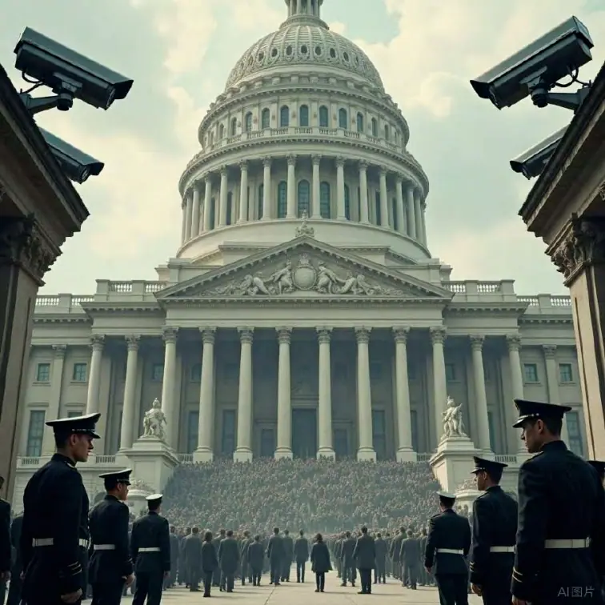

——从色盲的视角看西方文明的“SIO单一化”与福柯的“知识—权力暴政”
摘要（Abstract）
米歇尔·福柯（Michel Foucault）在其著名的“知识—权力”（Knowledge-Power）理论中深刻阐明了知识与权力之间的密切关联。根据福柯的观点，知识从来就不是完全中立、纯粹客观的事实或信息，而是在社会历史情境中被各种权力关系所界定、塑造和传播的产物。由此可见，所谓的“真理”并非永恒普遍的真理，而是随权力机构、话语体系及社会制度的变迁而呈现出不同的面貌和边界。社会藉由此种知识生产过程，进一步确立了何谓“正常”与“异常”、何谓“真理”与“谬误”的标准，并在无形中影响着人们对世界与自我的认知与理解。
现代西方文明在政治、经济、科学、医学、教育以及文化等诸多领域，建立了一套高度发达且广泛传播的“标准化SIO（主体—互动—客体）”体系。SIO意味着每一个个体在认识和行动中，都与其所处环境、所互动的客体，以及所扮演的主体角色存在密切关联。然而，当这种西方主流的SIO模式被整体制度化并不断向全球扩张时，便在全世界范围内逐渐形成一种“知识—权力暴政”。
与传统意义上通过军事或暴力手段进行强制的“暴政”有所不同，福柯式的“知识—权力暴政”更多依赖社会各制度和话语（包括法律、媒体、教育、医疗、市场机制等）对人们进行长期、系统、日常且潜移默化的塑造。通过“主导性SIO催眠创生”的漫长过程，个人往往在不知不觉中接受了这套标准化体系所赋予的价值、意义和行为准则，从而渐渐放弃对多种可能性（包括多元SIO形态）的质疑或坚持。这种放弃并非因为没有其他选项，而是因为在主流话语中，单一化的标准被渲染成最“科学”、最“正确”，甚至与个人的自由、福祉或社会认同直接挂钩，最终使得多元SIO模式在社会层面被集体忽视或排斥。
在此背景下，本文选取色盲（color blindness）个体的视觉感知经验这一具体现象，作为一个独特的切入点来进行更深入的讨论。色盲个体之所以成为典型案例，正是因为在标准视觉体系主导的世界里，色盲者被自动归类为“缺陷者”或“视力不完整”的群体。然而，如果从SIO多元化的角度来看，色盲的视觉模式其实同样具有相对稳定且可行的内在逻辑，并非“病态”或“退化”，而是一种对光谱刺激不完全相同的感知形式。因此，当我们看到社会、教育或医学体制习惯性地把色盲单方面定义为“必须被纠正或补偿”的症状时，便可以更加直观地观察到“知识—权力”如何通过“标准视觉体系”来强行排斥或忽略其他类型的正常感知方式。这种话语与制度层层叠加所形成的宏大结构，正是福柯所揭示的“权力效应”在当代的典型体现。
在剖析色盲案例之余，本文还将把这一分析框架延伸到更广阔的社会层面和文明背景之下。也就是说，在政治制度、经济发展模式、医学话语以及整体科学体系等诸多方面，西方文明的主流话语依托制度化与全球化传播路径，大规模地推行了一套被认为“普世”或“通用”的SIO规则与标准。无论是西方式的民主政治体制，还是以资本主义为核心的经济学范式，都在世界各地被广泛地宣扬、实行乃至强加。与此同时，那些不符合或不完全符合主流“正统”标准的制度与实践，往往被贴上“落后”“无效”甚至“危险”等标签，逐渐被边缘化或忽视。这种对多元SIO模式的再度排斥与否定，进一步佐证了福柯关于“知识生产的过程，其实也是权力延伸与实施的过程”的论断。
最后，论文的后半部分将立足于“多元SIO”理念，探讨如何在全球范围内重新思考并重构知识生产与社会认知体系。本文提出，若要真正超越西方中心主义和单一化知识霸权，就必须承认并切实尊重不同社会、不同文化、不同群体乃至不同个体的SIO模式，正视其存在和内在合理性。也只有在多元性得到承认和有机整合的前提下，人类文明的发展才可能在更广阔的意义上实现包容与创新，而不局限于某一中心话语的普遍化扩张。在这一探索中，色盲所带来的思想冲击，恰恰是对单一标准的最好反思：无论在何种领域，都应警惕用一种标准压制其他可能性的知识—权力运作方式。
关键词：福柯、知识—权力、SIO单一化、色盲、催眠创生、标准化、话语权、文明批判、主客互动、全球化

目录（Table of Contents）
绪论（Introduction）
1.1 研究背景
1.2 研究目的与意义
1.3 研究方法与创新之处
第一编：理论基础
2.1 SIO（主体—互动—客体）的理论基础
2.2 SIO的三性：特征、规律、结构
2.3 主客互动知识论与福柯思想的交叉：控制与塑造
1.1 福柯思想概述：从考古学到谱系学
1.2 知识—权力的核心范畴与方法论
1.3 “暴政”并非纯粹压制：知识生产的驯服与规训
第1章福柯的知识—权力谱系学
第2章 SIO理论的缘起与核心概念
第二编：从色盲视角审视知识—权力暴政
5.1 SIO单一化的实质：多元感知模式遭到否定
5.2 色盲者在社会互动中的自我规训与顺应
5.3 视觉霸权：从生理测量到道德审判
4.1 现代文明如何建立“色彩标准化”
4.2 教育、媒体与日常生活中的“色彩规范”
4.3 色盲被动适应：从自我认同到社会排斥
3.1 色盲概念的出现：18-19世纪的生理学与医学话语
3.2 现代医学对色盲的诊断与分类
3.3 由“生理异常”到“社会缺陷”的话语转变
第3章色盲的医学—社会定义：历史回顾
第4章“标准视觉”的知识—权力生产机制
第5章色盲SIO的多样性何以被遮蔽？
第三编：知识—权力的多重维度：标准化SIO的全球扩张
9.1 知识体系的教育建构：从教科书到国际学术期刊
9.2 语言与翻译中的不对称：英语的“世界语言”地位
9.3 媒体、互联网与社会舆论：隐性形塑和大众催眠
8.1 科学范式之争：波普尔、库恩与福柯
8.2 西方医学话语的全球扩散：临床试验、认证体系与科研经费
8.3 非主流医学或民间疗法的边缘化：另一个“色盲”处境？
7.1 自由市场VS.计划经济：知识—权力的意识形态冲突
7.2 标准化经济指标：GDP、通胀率、金融评级的霸权建构
7.3 新自由主义与发展中国家的依附地位：一种经济SIO的单一化
6.1 “唯一正确的政体”：从殖民扩张到国际秩序
6.2 话语与机构：联合国、世界银行、NGO的知识—权力网络
6.3 反思：“民主化”是否意味着单一标准的普适？
第6章政治维度：西式民主的全球普适论
第7章经济维度：资本主义市场逻辑的普世地位
第8章科学与医学维度：西方科学作为“真理垄断”
第9章文化与教育维度：话语霸权与知识筛选
第四编：主导性催眠创生与SIO多元化的出路
12.1 法律与制度创新：怎样容纳不同认知模式？
12.2 教育改革：让多元感知方式与价值观并存
12.3 新的知识生产范式：跨学科与跨文化研究
11.1 认识SIO多样性的必要性：色盲例证的启示
11.2 迈向多元文明：从制度到文化的互惠与对话
11.3 技术与数字时代：网络社群和知识去中心化的可能性
10.1 福柯与拉康、阿尔都塞：意识形态的内化与主体间性
10.2 催眠创生的步骤：暗示—重复—内化—再生产
10.3 价值置换：如何让个体相信“标准化SIO”带来幸福与自由
第10章主导性催眠创生：机制与心理学基础
第11章打破单一化SIO：多元世界观的重建
第12章建构真正的SIO价值多元化体系
结论（Conclusion）
知识—权力暴政何以形成？
色盲的隐喻：冲击单一化SIO的思维框架
福柯的遗产与未来：走向多元与解放
参考文献（Bibliography）
中外主要文献与著作
附录（Appendix）
绪论（Introduction）
1.1 研究背景
米歇尔·福柯（Michel Foucault）在20世纪后半叶对西方现代性所依赖的诸多制度与思想根基进行了系统而深刻的批判性研究。他的分析视野极为宽广，涵盖了监狱制度、医学制度、精神病学、教育体制、性及性别话语等一系列社会结构，这些领域共同构成福柯所谓的“知识—权力”（Knowledge-Power）运作的重要场域。在福柯看来，现代社会之所以能够有效地塑造个体的行为、思维与身份认同，很大程度上源于这些制度背后隐藏的权力关系网络。也就是说，知识并非完全中立或客观，而是被社会权力所界定，并借助规范、规训、话语等多重手段确立了“正常”与“异常”、“真”与“伪”的分野。
与此同时，主客互动（SIO）知识论在另一条学术脉络中强调了主体（S）、互动（I）与客体（O）之间的动态联系，并认为知识的诞生、传播与演化是由这三者共同塑造的过程。也就是说，任何一个个体在认知或行动时，都是在与外部环境或对象发生互动的具体情境中，逐步形成对世界的理解以及对自身的定位。主客互动论与福柯的知识—权力批判之间，存在着潜在的对话空间：一方面，若知识的产生依托于“主体—互动—客体”的三位一体结构，则权力如何在这一结构中施加影响、塑造或者扭曲我们的认知就显得至关重要；另一方面，如果福柯关注的是各种社会装置如何划定何谓“真理”，那么SIO理论恰好可以提供一个更加微观和动态的视角，去理解个体在日常生活层面如何被这种权力知识网络所“编程”。
基于此，本文将福柯对于知识—权力的批判性见解，与主客互动（SIO）知识论的核心概念结合起来，聚焦一个看似普通却又耐人寻味的现象：色盲（color blindness）。色盲之所以值得关注，不仅是因为它在医学、教育、社会交往中都牵涉到对视觉的规范与判断，更因为在主流话语中，“正常色觉”往往被视作绝对的、理所当然的标准，而色盲则被打上“障碍”或“缺陷”的标签。然而，透过SIO视角审视，我们会发现色盲个体的视觉体验同样具有一致性与可行性，只是与社会预设的色觉模式存在差异。这就引出了一个关键问题：为何色盲者的感知被认定为必须纠正？是谁在设定“正常”色觉的标准，又是通过何种社会机制与制度设计使这套标准获得合法性与强制力？在此过程中，多元化SIO的存在又是如何被一步步剥夺或压制的？
这些疑问将贯穿本文的分析主线，帮助我们在“色盲”这一特定案例中看见现代社会如何通过知识与权力的结合，为某一特定的SIO模式提供制度背书。在法律法规、交通规则、教育制度、就业标准等诸多领域，都能找到类似“标准化SIO”的身影，进而使社会成员默认这是唯一正当且不可置疑的模式，就如同福柯所揭示的那句话：“真理并非客观自明，而是由权力所定义并维护。”这也预示了当代社会对“差异性”的处置方式：并不总是直接高压，而往往借助法律、语言、制度设计、专业论述等方式将差异定位为“偏离正确轨道”，从而对其进行矫正或排斥。
1.2 研究目的与意义
本研究的出发点不仅仅停留在解析色盲者在社会生活中的实际困境，更重要的是希望透过这个具有代表性的“异质感知”案例，去深化对“知识—权力”与“SIO关系”相互交织的理解。在很多情况下，我们或许并未真正察觉到，当一个人被贴上“障碍”标签时，究竟是他的生理/心理特质本身“出了问题”，还是因为主流社会对认知方式、价值规范及互动模式的单一化设定，使得不同的认知/感知方式被自动边缘化？
从哲学与社会学的角度来看，“知识—权力”机制远比表面看到的更为隐蔽且坚韧。它不需要天天以强制手段进行惩罚或镇压，反而可以通过潜移默化的“教育”、社会纪律、公共话语等方式，让个人自愿或不自觉地接受一种被称作“正常”“科学”的标准。这种“主导性催眠创生”与现代社会的日常运作机制深度契合，令个人时常以为自己所采纳的只是“常识”，而对其背后的权力逻辑缺乏反思。
因此，本研究的意义可以从以下几个层面展开：
1. 理论层面：
将福柯的知识—权力批判与主客互动（SIO）知识论相结合，为我们提供了一个分析社会如何在认知层面塑造“软性暴政”的全新框架。与传统单一的福柯式权力批判相比，SIO视角有助于我们更精准地理解主体与客体及其互动过程的具体动态，说明知识并非仅在抽象制度或高层次话语中被塑造，也在每一次微观的互动中生长。
2. 实践层面：
以色盲者的处境为出发点，可以直观地展示社会与制度如何在诸多具体情境（如公共交通、职业资格、教育测验、医学诊断等）中排斥那些“不符合主流标准”的个体或群体。类似的情形并不仅限于色盲，还包括其他被视为“异常”的感知或认知模式，如自闭症光谱、听力障碍者等。他们在教育、求职、社交中面临的挑战往往源于一套单一化的规则，而非自身认知方式本身的“错误”。
3. 批判层面：
西方现代性自启蒙运动以来，就以理性与科学为核心支点，在全球范围内推广或输出其制度模式、知识体系和价值观。这种“普世标准”往往呈现出强烈的排他性：凡是不在其中的，就被视为落后、保守或不合逻辑。色盲问题本质上是一个缩影，让我们看到了如何借由医学话语、教育模式、政策设计等一系列手段，将多元SIO进一步边缘化，直至其被完全忽略或视为“必须纠正”。这能够引导我们去反思：全球化过程中，所谓“普适”的西方模式与话语，到底在何种程度上带有强制性与排斥性？
4. 未来展望：
在“后福柯”时代，学术界和社会实践领域都在寻找能够更好容纳多元性与差异化的新思维模式。如何建立一种真正多元、包容的知识与社会形态，让不同SIO模式都能和平共处并进行富有成效的对话？这不仅关涉到具体制度的改革，也呼唤从根本上重新审视我们对“正常”“科学”“正确”等概念的预设，并在文明对话和学术创新层面给予更多包容与鼓励。
1.3 研究方法与创新之处
为使论述更具系统性与学术严谨度，本文将综合运用多种研究方法，并试图在理论层面和实践层面达成创新。
1. 文献研究法
首先，本文对福柯原著、相关研究评述和论著进行了深入检阅，重点关注福柯在《疯癫与文明》、《规训与惩罚》、《性经验史》等著作中所提出的“知识—权力”框架。同时，也系统梳理了主客互动（SIO）知识论的核心文献，以便明确主体、互动与客体三者之间动态关系的关键内涵。在此基础上，本文又广泛收集了当代关于色盲的医学、社会学和心理学研究资料，例如色盲的种类、诊断方式、社会适应，以及不同社会与文化对色盲的态度差异。这些文献与资料为后续分析提供了丰富的信息支持。
2. 理论整合与比较
将福柯“知识—权力”与SIO理论进行并置和对照，是本文的重要学术尝试。一方面，福柯的谱系学方法关注的是权力如何在历史与社会层面生产真理与主体；另一方面，SIO论述则强调知识与互动之间的紧密耦合。因此，通过将二者相结合，我们可以更加全面地考察：当一套话语与制度将某种SIO形态确立为“正统”时，它究竟运用了怎样的社会规训机制？又是如何在个体的日常互动环节中具体发挥作用？
3. 个案分析法
色盲现象是本文最主要的案例。本文将就色盲在现代社会中的处境、困难以及适应策略进行深度剖析，包括医学对色盲的定义与分类，教育或就业中对色盲的限制、公共空间（如交通红绿灯）对色盲的隐形歧视等。为增强论述的广度和对比性，也可参考其他在社会中被视为“非主流”或“异常”的感知/认知类型（如自闭症、阅读障碍、听觉障碍），从而勾勒出一幅更完整的“SIO多元性”受限的图景。
4. 批判性反思与建构
在学理阐释和案例分析之后，本文将尝试提出初步的实践路径及学术理念，以期为突破“单一化SIO暴政”提供一些可行思路。例如，在法律层面如何修改原有的“一刀切”标准以包容色盲者；在教育层面如何设计新型课堂与测评方式；在公共治理中如何兼顾不同认知群体的需求；在全球化进程中又如何克服单一话语的霸权性，让不同文明与思维模式平等对话。
5. 创新之处
本文最大的创新之处在于，把一个在日常中经常被忽视或简化处理的现象（色盲），深入地纳入福柯式的知识—权力批判与SIO理论框架之中。通过这一具体切面，我们可以更生动、更贴近生活地呈现“标准化SIO”是如何在无声无息中排除或矫正与其不同的多元感知模式。这种思路，也为日后更广泛的跨学科或跨文化研究，乃至为公共政策制定者、教育者和社会工作者，提供了进一步思考和实践的空间。
简而言之，色盲案例不仅能够帮助我们理解什么是“知识—权力”在现代社会中的具体作用方式，也能在更为宽泛的层面上提示人们：我们日常所认为的“理所当然”其实往往带有特定的历史与文化印记，且背后蕴含着多种潜在的权力操作。若能以此为切口，我们将有机会重新检讨“真理”“正常”“科学”等理念的边界，并为打破知识—权力所设置的单一化SIO框架，迈出至关重要的一步。
第一编：理论基础
第1章福柯的知识—权力谱系学
1.1 福柯思想概述：从考古学到谱系学
米歇尔·福柯（Michel Foucault，1926—1984）是法国当代最具影响力的思想家之一，他在哲学、社会学、历史学、医学史、文学批评等多个领域都留下了深远影响。福柯早期的研究方法，通常被他概括为“ 知识考古学”（Archaeology ofKnowledge）。这一概念源自于他对不同历史时期知识形态的系统发掘，类似于考古学家清理地层与遗迹的方式，通过挖掘、分类和描述，尽力还原在特定时代中行之有效、占据主导地位的知识体系。福柯在《词与物》《知识考古学》等著作中，通过对话语与知识的历史考古来揭示：在不同时期，社会对“理性”“真理”“科学”等概念的理解其实并非一成不变，而是深受当时学科范式、制度规则以及社会运作模式的影响。
然而，“考古学”方法在一定程度上聚焦的是知识形态的描述与梳理，尚不足以充分解释为何某些知识在特定历史时段得以确立主导地位，以及如何形成对人们的行为与思维施加影响的过程。于是，福柯在后期的研究中逐渐转向了“谱系学”（Genealogy）的分析视角。这种方法明显受到尼采（Friedrich Nietzsche）谱系学研究的启发，强调对知识、道德、价值观念的历史渊源进行追溯，从而揭示其中的权力结构与斗争过程。
福柯在《规训与惩罚》《性经验史》《疯癫与文明》等著作中，就采用谱系学的方法，对监狱制度、医学制度、精神病学、性话语等现代社会的重要领域进行了深层剖析。他试图说明，所谓“合理的”“科学的”或“正常的”社会机制并非自然生成，而往往是权力运作在特定的历史脉络中一步步构建起来的。这样一来，“知识—权力”的交织便成为福柯的核心关注点：知识并不只是在单纯地反映客观世界，也可能是作为话语与制度的载体，为特定的权力关系服务。通过研究“知识”如何在历史进程中被建构、流传、修改乃至消失，福柯给出了一个揭示现代社会深层支配逻辑的透镜。
在考古学与谱系学的衔接处，福柯愈加关注现代社会中各种“装置”（dispositif）的形成与运转机制。这些装置包括法律、监狱、医院、学校、军队、工厂、媒体等，它们看似独立，却在更大范围内共同塑造了个体和群体的行为方式与思维习惯。可以说，福柯考古学阶段的研究为理解不同时代知识形态之间的断裂与嬗变提供了基础；而谱系学阶段，则进一步揭示了权力在具体社会实践中如何通过知识话语进行“微观渗透”，进而影响与改造人们的身体、情感乃至意识。
在本文的脉络下，“考古学”与“谱系学”之间的互补对于理解福柯对“暴政”的分析至关重要。正因为他从知识变动的历史中看到了权力的影子，因此才会在后期以更尖锐的方式批判现代社会种种制度背后的支配与规训手段。要理解“知识—权力”如何在社会各层面进行“暴政”式运作，就需要回到福柯的谱系学视野：它不只讲述知识“是什么”，也关心谁在什么条件下拥有话语权、以及被这些话语“塑造”或“规训”的人如何在社会秩序中被定位。
1.2 知识—权力的核心范畴与方法论
知识不再是客观中立的真理
在福柯的理论框架中，最具颠覆性的一个观点是：知识从来不是完全客观中立的。传统认识往往视知识为对客观事实或自然规律的理性反映，或者把科学、学术成果看作对世界“真理”的发现。福柯对这种假设提出了严重质疑。他认为，每个时代都有自己独特的言说规则和学科范式，决定了什么样的言论和实践能够被接受或视为“真理”，以及哪些言论被排斥或视为“荒谬”，这在他早期对《疯癫与文明》中精神病学史的分析尤为突出。
在这一意义上，知识不再只是对客观世界的被动镜像，而是社会制度和话语体系的一种运作产物。某些理论被视为“科学”或“普适”，并不一定因为它们本身“更接近真相”，而可能是因为这些理论与社会权力结构相契合，能够在制度层面得到扶持和推广。例如，在监狱系统、医院系统或教育系统中，当权力机构规定了诊断标准、评价规则或教育大纲，那么相应的知识形态也将被社会广泛接受，并以“理所当然”的面目出现，掩盖了其背后复杂的历史与权力动因。
权力具有生产性而非仅仅压制性
在谈到“权力”时，人们往往联想到国家机器或统治阶层所施加的控制与压制，包括暴力、法律或行政手段等。福柯并不否认这些压制功能的存在，但他进一步指出，权力更重要的是它的“生产性”（productive），即权力并不仅仅阻止或禁止某些行为，还在积极地创造新的主体类型、身份认同与社会关系。
这种创造或生产，并非是通过高压强制的方式才得以完成，而常常伴随着知识体系的构建与传播。在现代社会，各种制度、机制与学科科层为个体提供了一整套话语和范畴，用来理解自我与世界。例如，医学并不仅是救治疾病的专业，也在不断提供“健康”与“病态”的判断标准；心理学作为一门学科，也在塑造“正常心态”与“异常心理”的社会观念；城市规划、社会福利等政策更是在决定“合理的城市生活”“正常的社会保障”应该是什么样的。所有这些不同领域的运作方式，都在协同地将大量的新观念、新分类、新身份输入到社会之中，让人们在潜移默化里接受某种新的生活方式或行为模式。
主体被塑造：现代规训社会中的驯服机体
从医院和精神病院，到监狱、军队、学校、工厂等机构，福柯在一系列作品中揭示了现代社会对个体身体与行为所进行的系统性规训过程。比如，监狱制度采用全景敞视（Panopticon）式的监控来实现对囚犯的持续观察与驯服；学校在统一课表、班级制度和考试评价系统的设计下，让学生逐渐自我约束并内化对时间、纪律、规范的服从。福柯由此提出，“主体”并不是一个先验或自然的存在，而往往是在权力网络的作用下逐渐成型的。社会对身体的管理、对思想的规范化，会把人塑造成符合社会秩序期待的“主体”。这种建构过程也可以延伸到性、道德、审美、言语等多维领域，从而形成一个庞大而细密的网。
简言之，福柯的知识—权力理论向我们展示：知识与权力相互交织，塑造了个人或群体对真实世界的理解，同时也让人们无意识地对自身角色进行定位和服从。从表面看来，个体只是“接受知识”或“遵守社会规则”；但从更深层次看，个体是在一个被社会结构和话语体系预设好的框架中被教育和规训，逐渐失去质疑与抵抗的可能性。
1.3 “暴政”并非纯粹压制：知识生产的驯服与规训
福柯所谈论的“暴政”，常常与传统政治学意义上的独裁或专制不同。后者更偏向通过军队、警察、法律等公开化的暴力机器强制执行命令，违抗者可能面临惩罚或死亡。而福柯所描绘的“知识—权力暴政”则具有更为隐蔽、分散且深入日常生活的特征。它不一定直接以威胁或惩罚的形式出现，而更侧重以“知识生产”与“社会规训”来让人们自觉或被动地服从，并在此过程中逐步形成难以抗拒的“真理场域”（regime of truth）。
这个“真理场域”意味着，人们生活在某种普遍认同的知识范式和价值体系当中，往往并不去怀疑这些知识或价值背后的正当性。因为在这样的氛围下，专家意见、学科知识、制度规定或媒体宣传都一致性地告诉我们：这就是“正确”“科学”“理所当然”的选择。若有人想要质疑或逆行，就会被贴上“落后”“反社会”“不理智”甚至“病态”等标签，并面临社会的嘲讽、排斥或其他形式的惩戒。这种社会运作逻辑其实极其稳固，因为它同时获得了“公共理性”“专业权威”和“普遍实践”的多重支持。
从这种角度出发，当我们提及“知识—权力暴政”时，就不仅是一种简单的政治高压或意识形态镇压，而是更为日常、持续且深刻的“主体改造工程”。在这样的工程中，每个人从出生后就被各种社会制度和规范所环绕，接受并逐渐认同那些看似天经地义的标准与规范，包括对身体的认知、对心理的判断，以及对自身在社会结构中的角色定位。
在色盲案例中，这样的“暴政”形式尤为显而易见：色盲并不需要“警察”和“监狱”来进行所谓的“纠正”，却仍然在现代社会中被视为一种“障碍”或“缺陷”。色盲个体从小就被医疗体系诊断、被学校或家长教导“这是不正常的视觉”，在公共交通规则下必须以“记住红灯在上、绿灯在下”等方式来适应主流标准。久而久之，色盲者自己也往往相信“自己有问题”，并通过各种补偿策略融入社会，最终对主流话语并无太多质疑。
这正体现了福柯所谓的“暴政”与“权力”的生产性：社会话语和规范在反复强调“正常色觉”是“正确的”“绝对需要的”，于是色盲者被动地接受“我的视觉模式错了”的定位；同时，大多数“正常色觉”者也不会想到还有别的可能性，而只是一味地遵循交通规则与视觉标准，认为这就是最安全与最便利的系统。整个过程并无强硬暴力，却宛如无形的网络，深深嵌入进人们对世界的理解和对自我的期待。这就是知识—权力在微观层面上的“暴政”运作：它几乎不需要明目张胆地诉诸暴力，就能完成对社会主体的自我管理与规训。
由此可见，福柯式的“知识—权力暴政”绝不仅仅是一个学术用语，更是一种对现代社会运作逻辑的描述与批判。它让我们看到：在日常生活的边边角角，都可能蕴含着对多元感知、差异身份的排斥与规训，并且这种排斥往往以“科学”“进步”“规范”等冠冕堂皇的理由出现，难以被察觉或质疑。后续的章节中，本文还将结合主客互动（SIO）知识论，探讨这一暴政如何在SIO层面压制或剥夺了多元认知模式的正当性，让某一种“标准化SIO”取得绝对地位并不断强化。

第2章 SIO理论的缘起与核心概念
2.1 SIO（主体—互动—客体）的理论基础
SIO（Subject–Interaction–Object）理论的核心主张，是对传统认识论中“主体—客体”二分法的修正和扩展。在传统的认知模式或知识理论里，人们往往将“认识”视为主体对客体的直接把握：主体被设想为一个相对独立而能动的存在，客体则常被视作相对被动的对象，主体只需去“发现”或“揭示”客体所固有的规律即可。但这种二分式的框架在面对当代复杂的认知与社会问题时，经常显得过于简化。许多学者开始意识到，在真实的认知过程中，主体与客体并非完全孤立，而是借助无数具体情境中的交互（interaction）而建立联系。SIO理论正是在此基础上，将“互动”提到与主体、客体同等重要的地位，视之为一个不可或缺的维度。
从本体论和认知论的角度来看，SIO理论强调“一切认知都必须在‘互动关系’中才能成立”。换言之，主体和客体要想形成稳定且可被理解的关系，必须透过特定的沟通、行动或经验过程，才能将彼此的属性或意义彼此显现出来。譬如，在研究人与自然环境的过程中，如果我们仅仅把人视为被动的观察者，或者把自然环境视为静止的客体，我们就无法解释生态学、环境心理学等跨学科领域里所展现出的各种复杂现象。相反，当我们把“互动”纳入分析框架，便可以更好地说明，人类对自然环境的认识往往是在多重实践——如农业耕作、科学实验、城市规划等——中不断演化的，这些实践构成了主体与客体之间最重要的联结媒介。
在某些方面，SIO理论与福柯所关注的“权力—知识—主体”结构具有相似之处。福柯指出，知识与主体并非先验地存在，而是通过权力的行使和话语的流通逐渐形成、巩固和改造。SIO理论也认为，主体及其对客体的理解，并不只是一种被动接收或预先给定的结果，而是需要在“互动”的动态关系里得到展开。正因为如此，我们才能从社会性、文化性以及实践性的角度，去探讨各种不同情境下的知识生产与认知过程。SIO所强调的“互动”更进一步地呼应了对社会关系网络的考量：任何人与客体（无论是物质的、概念的还是抽象的）发生认知时，背后都可能存在制度、语言、技术或媒体等多重环节共同参与。
2.2 SIO的三性：特征、规律、结构
要更细致地把握 SIO 理论的内涵，可将其分解为“特征”（Feature）、“规律”（Pattern）和“结构”（Structure）三大维度。每一维度都从不同角度展示了主体—互动—客体三者之间的多层次关系。
1. 特征（Feature）
特征并不单纯来自主体本身或客体本身，而是三者在互动过程中所共同呈现出的整体面貌。比方说，当一个学生在实验室里观察化学反应时，他（主体）所看到的化学现象（客体）与所采用的实验操作、仪器条件（互动）密切相关。如果仪器精度不同，或实验条件有变，则化学反应的“特征”也会有差异。故而我们不能简单地说“化学反应的性质就是这样”，而要考量实验操作以及观察者所处的环境。这个“整体面貌”往往可以在一定范围内被重复验证，也会因具体条件变化而展现新的侧面。
2. 规律（Pattern）
规律指的是互动过程所遵循的内在模式或相对可预测的模式。例如，SIO理论认为，当一个社会大规模采用某种数字技术（如社交媒体或手机应用）时，这个社会中人与人之间的互动方式、人与信息的接触方式都会呈现出新的规律，比如信息过滤、群体极化现象、注意力经济等。在更微观的层面，一对母子之间的互动模式、一个团队的协作方式，也都可以被视为特定的SIO规律。关键在于，这些规律不属于单纯的主体属性，也不属于客体属性，而是交织于主体与客体持续联结的过程。
3. 结构（Structure）
结构关注的是主体与客体在互动过程中如何排列、结合和相互影响。它既可以是空间意义上的，例如在生物学中探讨神经元网络如何将感知信号与大脑的认知机制对接；也可以是社会制度意义上的，譬如在教育体系里，学生（主体）如何与教学内容（客体）通过课堂、考试、课外活动等一系列互动环节形成一定的层级与角色分配。结构可以相对稳定，但并非永远不变，一旦外部条件或内部关系发生重大转变，原有的结构可能被打破或重组。
4.
通过这三性分析，SIO理论力图展现认知和实践活动中的整体关联性。它在提醒我们：任何一种被我们视为理所当然或客观的知识，往往都是在多重互动条件下才能稳固下来，既依赖于主体的能动性，也依赖于客体所提供的限制或可能性，更离不开具体的语言、制度、技术等中介要素。SIO作为一个“动态复合存在体”，使得我们很难再将主体与客体截然分离，也不能忽视互动对认知结果的决定性影响。
2.3 主客互动知识论与福柯思想的交叉：控制与塑造
一个关键的问题在于：若承认一切知识都在SIO关系里生成，那么必然要追问谁或什么在支配或引导这种互动关系？在此，福柯的“知识—权力”理论与SIO理论产生了重要的交汇点。
福柯通过他的社会批判与历史谱系学研究揭示：无论是教育、医疗还是司法，往往都存在一种看似中立客观、实则被权力渗透的话语体系。它们赋予某些人（如专家、官员、学者、医生）定义“正确互动方式”的权威，也规定哪些行为被视为合法、正常，哪些则是无效、非法或不健康的。在SIO理论看来，若“互动”在很大程度上受到这种话语与制度的控制，那么人们所生成的知识就会带有某种倾向或偏见。所谓“唯一正确的SIO模式”便是知识—权力能够最有效运作的表现形式。
权力决定互动场景
当一个社会广泛推行某种标准化考试或技术规范时，就在一定程度上规定了学生（主体）与知识/工具（客体）之间的互动形态。例如，学校若规定只能通过纸笔测试衡量学习成果，那么擅长动手实验或实践型技能的学生，就可能在认知与评价中受到忽视。这背后便是对互动场景的支配。
权力过滤信息与选项
在医学或法律等领域，“专业化”话语可以过滤哪些互动被看作“有效”或“可靠”，而哪些互动被视作“非法”或“荒谬”。某些替代医学、民间疗法之所以被边缘化或视为伪科学，未必是它们对客体无效，而可能是因为未能通过主流制度所设定的研究和验证标准。
权力塑造主体与客体的身份
对色盲现象的定性就是一个典型例子：医学体系定义了“色盲”这个概念，认为正常色觉是默认标准，色盲则是“失常”。这种定义在SIO层面，等于将色盲者（主体）与社会功能（客体）之间的互动固定为“对抗”或“纠正”的关系，而不承认其另一种感知方式的可能性。久而久之，这套规定性知识便成为大家默认的“常识”，让人误以为这是绝对自然与普遍的规则。
由此可见，在福柯的知识—权力视野中，权力其实对SIO起到了结构性塑造的作用。换句话说，如果没有对“正常”与“异常”的权威界定，人们或许会在更加多元、开放的互动中形成各种各样的认识和实践。但当权力集中在少数机构或话语中枢手中，并借助法律、教育、宗教、媒体等手段反复强化时，整个社会便会逐渐内化这套“唯一正确”的SIO模式。例如，交通规则便深深植入我们对色盲的看法；学术标准和职业标准则影响我们对某些人才类型或工作方式的评估。
也正是因此，我们可以将福柯所提的“知识—权力暴政”理解为在SIO层面上的一种“系统格式化”。某些原本可能并行不悖的认知或实践方式，会被排除在社会认可之外。想要融入社会的人，就只能接受被官方或主流所认可的SIO结构。对福柯而言，这不只是一个认知层面的问题，更是一个影响个体自由与创造性的根本性社会问题。被嵌入单一化SIO的人们，也将难以看到或理解自身可以如何超越当前的规则与范式。
综上所述，SIO理论与福柯的知识—权力批判彼此呼应。SIO指出知识生成取决于“主体—互动—客体”的动态关系，而福柯进一步揭示“谁”控制或支配了这一关系，谁就能在相当程度上塑造群体的认知与行为，并在社会中建立某种隐性或显性的权力格局。两者的结合，让我们对现代社会的知识生产、规范设置和价值分配方式有了更加丰富而细微的理解，并为后续对“色盲”等具体案例的剖析奠定了理论基础。

第二编：从色盲视角审视知识—权力暴政
第3章色盲的医学—社会定义：历史回顾
3.1 色盲概念的出现：18-19世纪的生理学与医学话语
色盲（color blindness）一词所指的现象，即人眼对特定色彩的辨别能力存在缺失或差异，这种问题在历史上早有各种民间传说或零星的学术记载。不过，真正将其纳入系统化研究的起点，通常可以追溯到18、19世纪的西方生理学和医学兴起时期。当时，随着牛顿光学理论的进一步传播与发展，科学界对光谱与视觉机制的关注持续升温。人们开始研究不同波长光线对视网膜的刺激效应，以及人眼结构如何把光信号转化为神经冲动。与此同时，伴随工业革命的进程，社会也对“标准化”视觉需求越来越高，比如纺织、印刷、染料、交通等行业，对颜色的区分与识别具有实际的经济与安全意义。
在此历史情境下，约翰·道尔顿（John Dalton）的研究具有代表性意义。道尔顿本身便是一位色盲科学家，他在18世纪末到19世纪初的科学界声名卓著，“道尔顿”也因此成为某类色盲（Daltonism）的代名词。道尔顿在研究个人色觉过程中，记录并分析了自己对红色与绿色辨别的困难，并试图用当时的光学与化学知识来加以解释。他的工作开启了一条从个体经验出发、力图将色觉差异纳入生理学与化学理论框架的道路。随后，多名科学家（如托马斯·扬 [Thomas Young]、赫尔姆霍茨 [Hermann von Helmholtz]等）在视觉机理及色彩感知理论的奠基上，逐渐拓宽了对色盲成因的探讨。
然而，这些在学术领域中的突破很快被纳入当时主流医学范式之下。与其他生理或心理差异一样，19世纪的医学话语往往倾向于以“正常与异常”或“健康与病态”的二元对立来理解个体差异。随着色觉研究的深入，社会逐渐形成了对色盲的共识：它是一种偏离常态的视觉状况，属于需要分类、检测与干预的“疾病”范畴。换言之，一旦某人的色觉测试无法匹配被视为“正常”的光谱辨别能力，便自然被贴上了“缺陷”或“障碍”的标签。这种建构过程也并非仅限于学术探讨，而往往受到社会需求的推动——举例来说，一旦铁路、船舶或消防等领域要求区分灯光或标志灯的颜色，色盲就立刻在实践层面被视为“危险的”或“不可胜任的”。
综上可见，18、19世纪是色盲理论从零散认识走向系统研究的关键阶段。在这个过程中，“色盲”从一个单纯的“视觉差异”逐渐发展成具有医学定义的专业术语。它所折射的并非仅是眼睛和光学之间的关系，更与当时的科学知识体系和社会需求相互交织，标志着“正常色觉”这一概念的确立与对“异常色觉”的医学化归类。
3.2 现代医学对色盲的诊断与分类
自19世纪末到20世纪初，随着生理光学和医学技术的不断进步，针对色盲的诊断与分类系统愈发精细。如今，主流学术界对色盲的认识一般集中在视锥细胞（Cone cells）功能的缺失或异常上。人类视网膜中主要存在三种对不同波段光线敏感的视锥细胞，常被称为L-锥（长波，感知红色）、M-锥（中波，感知绿色）和S-锥（短波，感知蓝色）。当某一或多种视锥细胞存在基因上的缺陷或感受度异常时，个体的色彩区分能力就会受到影响，从而表现为色盲或色弱（color deficiency）的症状。
现今最常见的色盲分类主要包括以下几种：
1. 红绿色盲（Red-Green Color Blindness）
这是最普遍的类型，通常与X染色体相关联，因为控制红绿色视觉蛋白合成的基因位于X染色体上，男性发病率明显高于女性。红绿色盲又可以细分成几种亚型，如原红（Protan）和中绿（Deutan），具体取决于缺陷的是哪一种视锥细胞。
2. 蓝黄色盲（Blue-Yellow Color Blindness）
相对少见，通常涉及S-锥细胞的功能异常，表现为对蓝色、黄色的辨别困难。此类个体可能将蓝色视作灰色或与绿色、红色混淆。
3. 全色盲（Achromatopsia）
这是一种罕见且较为严重的形态，患者几乎丧失了对色彩的感知，生活在一个接近灰度的视觉世界里，同时常常伴随对强光的畏光症状。
在诊断方法上，从最早的简单对比卡片或不同颜色光源，到后来出现的石原色盲检测图（Ishihara test），再到如今更先进的光谱分析或基因检测技术，医学不断尝试找出“色觉异常”的客观证据，以此将“正常视力”与“色盲”清晰区分。医学或眼科学家或许没有恶意地将色盲者标签化，但这套分类本身却在社会层面构建了一种“正常—异常”的二元对立：能分辨完整色谱者被定义为“健康”，无法达到标准者则被划入“色觉障碍”范围。
需要指出的是，现代医学话语在很大程度上依赖统计学标准。若绝大多数人在同样条件下能辨识某组颜色，就将之定义为“正常”；而无法完成者理所当然地落入“异常”范畴。这种逻辑看似合理，但也忽略了感知多样性的现实：色盲者的视觉并不一定在所有情况下都表现为劣势，甚至有研究表明某些色盲者在明暗度或纹理识别方面具备更高的敏感度。只是这类情况长期缺乏关注或研究，也缺乏相应的社会资源来帮助人们看待“色彩辨识缺陷”之外的潜在优势。
第4章“标准视觉”的知识—权力生产机制
色彩在现代文明中扮演着至关重要的角色。无论是工业生产、商业设计，还是城市交通、文化教育，都在很大程度上依赖对色彩的识别、定义和使用。与此相对应，“正常色觉”逐渐成为一种隐性但极其强势的社会准则，将那些无法或难以融入这种标准的人群自动归类为“异常者”。本章将从色彩标准化、教育与媒体、以及日常生活的具体实例出发，揭示现代社会如何在多重层面构建并巩固“标准视觉”，并使得色盲者在这一体系中被迫适应或被动排斥。
4.1 现代文明如何建立“色彩标准化”
工业化与商业化：统一化色彩编码
现代社会对色彩的需求，不仅仅局限于艺术或个人审美，还渗透到大规模生产、商品流通和全球贸易当中。随着工业革命的兴起，欧洲和北美各大工厂与公司迅速扩张，在机床、纺织、化工、染料等行业内涌现出对色彩一致性、可复制性的巨大需求。例如，早期的纺织厂需要大批量染制相同色彩的布料，保证在不同批次生产中维持颜色的高度一致；油漆厂和涂料厂也需要严格的配方标准，来满足建筑与家装对颜色精准度的要求。在这样的背景下，“工业化色彩标准”应运而生。
其中最典型的便是潘通色卡（Pantone）等工业标准化体系。潘通通过研究不同色系在各种材料和环境下的呈现效果，推出了可供全球通用的色彩编码系统，使得设计师、印刷厂、品牌商可以在跨地域、跨行业的合作中保持对同一种色彩的统一理解。这个编码体系，虽然极大地促进了商业效率，也使跨国企业的产品在颜色品控方面达成了一定程度的“全球通用”。然而，在承认其便利性的同时，我们也要看到，这种工业标准本身具有高度的“排他性”：它暗含着“默认色觉”的存在前提。要想准确理解或使用这些编码，个人必须具备相当完备的色彩分辨能力；对色盲者或色弱者而言，许多色卡看上去并没有显著差别。
与此同时，随着全球贸易和市场竞争日益激烈，企业需要在包装、广告、品牌识别（Brand Identity）等方面投入大量精力，巧妙运用色彩来吸引消费者并树立品牌形象。例如，可口可乐经典的红色调，乐高鲜亮的黄、红、蓝色组合，耐克标志性橙色包装等，都在潜移默化中强化“正常色觉”消费者对这些品牌的快速联想和辨识能力。对色盲群体而言，若无法准确地区分这些商标色差，便可能在某些时候感到困惑或受到额外阻碍，也进一步强化了他们对“自己不符合主流消费者标准”的自我认知。这些现象背后映射出的，正是工业和商业在色彩应用上的一体化趋势，以“排它性”为代价构筑了高度统一的色彩语言。
交通规则：红绿灯与色盲“被迫适应”
如果说工业色彩标准更多呈现在商品与生产领域，那么交通规则中的色彩应用则更直接地影响到城市公共生活。红绿灯正是一个最为普遍、直观的例证，它不仅出现在城市街道、十字路口，也在铁路、航运、机场乃至工厂安全体系等多种场景中担任信号指示功能。其核心逻辑是：通过对红、绿、黄三种颜色的分别运用，快速传达“禁止”“通行”“警示”等信息，实现对人员和车辆的调度管理。
在看似简单直观的红绿灯系统背后，却隐藏着对色盲人群的结构性排斥。因为这些信号灯之所以“显而易见”，正是基于大多数人能明显区分红绿黄的前提；当有些人先天或后天无法清晰分辨红绿色时，他们就必须通过不断记忆红绿灯位置或灯光的明暗差异来保证安全驾驶或行走。因此，对色盲者来说，这种系统不仅不便利，甚至可能在紧急情况下造成危险。许多国家的驾驶执照考试都设有色觉检测，一旦不达标便无法取得驾照，也意味着在现代城市生活的高节奏与高机动性环境里遭遇显著劣势。
这些交通规则设计在问世之初，或许并未刻意针对色盲群体进行“排斥”，但结果依然是形成了一种“标准化色觉秩序”：城市运行默认司机和行人都能准确辨认红、绿、黄灯，否则就被视为“风险因素”或“问题人群”。这也验证了福柯式的“知识—权力”洞见：社会往往在制度确立过程中，把“主流”或“多数”人的特征视为“正常”，并依靠公共权威（法律、行政部门）将这种正常化标准贯彻到底。少数群体就算并非自愿，也会被迫顺应这种规则，否则就无法参与正常的社会运作。
教育体系：从小学到高中的色彩学习
教育体系是另一个广泛而深远的领域，通过课程设置、教材编写和教学评估等形式，培养下一代的认知方式和思维模式。在颜色相关知识的教育方面，大多数学校默认学生能够精确分辨不同色彩，进而进行涂色作业、美术课程，乃至更高层次的色彩科学或设计课程。教材编写过程中，往往采用统一的印刷色彩标准，以及对红橙黄绿青蓝紫等色系的线性认定。例如，小学生需要掌握基本色彩和色轮理论，中学生在化学或生物课中会进一步学习光谱知识。然而，教材和教师培训很少考虑到色盲或色弱学生在辨色方面的困难。
对色盲学生而言，单是最基础的色彩作业，就可能时时面临挑战：要么被迫询问同学“这个颜色对吗”，要么在作业成绩上被扣分，从而产生自卑心理或厌学情绪。有些孩子甚至直到面对屡次“涂错颜色”时才被教师或家长发现“视力异常”，在这之前，他们已经积累了无数次不被理解的尴尬或被同伴嘲笑的经历。久而久之，这些色盲学生会更加依赖替代性策略（如借助标注、位置记忆、文字标签），或者干脆在美术、设计、化学实验等需要颜色辨识的科目中选择回避。教育体系在这一问题上的“无意识忽视”，也成为塑造色盲群体自我认同的重要推手：他们在成长过程中往往会得到隐含的暗示——“自己在颜色认知上就是不正常”的，不得不接受更低或更有限的评价标准。
4.2 教育、媒体与日常生活中的“色彩规范”
将注意力从工业、交通和学校层面进一步拓展，我们会发现整个社会的日常生活与大众文化，都在默契地遵从着“标准色彩”所设定的秩序。无论是电视节目、网页设计、广告海报，还是社交媒体平台的UI界面，都倾向于采用大多数人能轻松区分并产生情感联想的色彩方案，鲜少为色盲或色弱者提供平等的信息传递机制。在这里，色彩已经不是纯粹的信息工具，还承载了深层的文化符号价值：红色可能被赋予热情、警示或喜庆的涵义，绿色象征环保或生命力，蓝色则代表科技感或冷静等等。
大众媒体的“天然正当性”
电视广告、网络媒体以及各类品牌营销中，几乎一致地沿用主流色彩区分方式，以吸引观众并形成统一的品牌视觉形象。对于色盲或色弱观众来说，这就造成了信息不对等：当广告或节目使用微妙的色调变化来传达情感或概念暗示时，色盲人群可能完全感受不到这些细微的差别。结果，他们往往只能依赖辅助说明、文字注解、或他人提示来“理解”原本设计者希望通过颜色直接传达的内容。例如，一家环保组织可能使用深绿和浅绿的渐变来突出生态概念，但色盲者却看不到这种渐变所带来的视觉冲击，反而得到一张平淡无奇的画面。于是，这种“天然正当性”的色彩使用习惯，就像福柯所说的“微观权力”（micro-power）一样，通过不断的重复与强化，让色盲群体意识到自己被排除在视觉主流之外。
色盲者的自我“矫正”策略
在这样的日常氛围之中，色盲个体为了生存和适应，也会发展出一系列自我“矫正”或“补偿”策略，比如：
1. 记忆位置或形状
：如在交通灯场景下，色盲者会记住“最上方的灯为红，下方为绿”，或者通过灯光亮度的强弱、形状的差异来区分信号，而非单纯依赖颜色本身。
2. 依赖他人引导
：在挑选衣物、配色方案或进行美术设计等需要明显色彩协调感的场合，他们往往依赖家人、同伴或同事的帮忙，甚至干脆让别人代为完成。
3. 数码工具辅助
：随着手机App和辅助软件的发展，一些人会使用能够实时识别颜色并进行语音播报的工具，或在数码平台上用滤镜功能将色彩差异转化为对比度或纹理的差异。
尽管这些策略在一定程度上帮助色盲群体“融入”到标准化色彩世界里，却也让他们在日常生活中承受更多额外的劳动与心理负担。更重要的是，这些自助策略往往只停留在个人层面，“正常色觉”作为主流秩序并未因此受到任何挑战或自我反省。色盲者通过一次次弯曲迁就，让主流群体无须去反思这种色彩规范是否真的包容所有人，也不会想到更系统地设计“对色盲友好”的交通标识、教学资源或者商业应用。
4.3 色盲被动适应：从自我认同到社会排斥
“被动适应”是色盲者在主流“标准视觉”氛围下最普遍的生存策略。它不仅关乎外在规则的执行，也深刻影响着色盲者对自我的认同乃至社会关系。
自我认同：反复“失败”中的自我怀疑
想象一个色盲儿童在小学阶段：他在美术课上的色彩作业屡屡被老师批评“色彩不对”，或在自然课题中无法准确识别各种样本颜色。其他同学或许会好奇地问他“你为什么老是涂错？”甚至可能出现无心的嘲笑或玩笑。这些不断叠加的小挫折，往往使得孩子逐渐内化一种“我与别人不一样”“我有缺陷”的自我评价。久而久之，当他们进入初中或高中，就可能在美术、设计、实验操作等需要色彩能力的课程里自发地回避，或者在考试与测验中屡屡碰壁。这种被动适应的过程常常持续多年，并深刻影响到他们对自己能力与价值的看法。
从社会融合到社会排斥：潜在歧视与边缘化
社会上许多场景都假设个人能正确辨别颜色，比如求职面试时，人们习惯问“你会不会配色？审美怎么样？”。色盲人士若坦诚告知自己的情况，很可能被用人单位视为“隐形障碍”，在设计、营销、时尚、甚至普通办公室工作中遭遇排斥——毕竟几乎任何与图表或图形处理相关的工作都离不开颜色元素。即便一些用人单位不会公开声明“我们拒绝色盲”，但在面试或实际工作中，色盲者往往会遭遇更严格的审查与非正式的质疑。这些隐形或半公开的歧视，进一步加剧了色盲人群在就业市场上的不利地位，使他们在社会结构中面临更大挑战。
福柯式分析：知识—权力如何塑造“单一视觉SIO”
回到福柯的“知识—权力”框架，我们会发现，上述对色盲者的各种规训与排斥，恰恰体现了社会如何在日常细节中执行“真理场域”（regime of truth）的过程。现代社会并不需要用警察或暴力来强迫色盲儿童“去纠正错误”，而是通过教育体系、交通规则、商业惯例和大众媒体这一套分散却紧密呼应的网络，让人们自觉地接受“标准视觉”是唯一正确且合理的设定。色盲者自己也逐渐被灌输或暗示，认为“自己有问题”，从而进入自我怀疑、自我矮化的心理循环。
这种现象背后的逻辑非常典型：
1. 社会制定“标准”，将其赋予合法地位与普适价值；
2. 少数不符合标准的人群被标签化为“异类”或“缺陷者”；
3. 这些少数群体要想融入社会，只能被动遵循或迎合主流标准；
4. 大多数顺利适应的人则在无形中进一步强化了这个标准的正当性。
于是在福柯的意义上，我们见证了一种“柔性暴政”：它并不像封建帝王或极权统治那样赤裸地施加武力，却通过制度化与话语灌输，使得人们普遍相信“有颜色差异感受能力才是正常人”。色盲者在无法抗拒的压力下，只能沉默地“认命”，将自身的另一种视觉模式视为“错误”甚至“耻辱”。从更广义的角度看，这种“知识—权力”的形塑方式也能解释为何许多社会中，针对各类差异（如听力障碍、阅读障碍、自闭症等）的政策和文化环境往往以矫正与改造为主，而缺乏对多样性本身的理解和接纳。
小结
“标准视觉”的生产机制之所以能够在现代社会中全面铺开，并形成对色盲者的系统化边缘化，主要得益于以下几点：
1. 工业化与商业化的推动
：全球色彩编码体系和大量依赖色彩的产品设计、广告营销，使主流色觉拥有巨大的经济与文化话语权。
2. 交通与公共安全的合理化需求
：红绿灯等公共规则往往没有针对色盲的替代设计，却影响着交通安全管理的基础。3. 教育与媒体的深度嵌入
：从教材到大众媒体，都强调并重复“标准色彩”的自然正当性，将其融入社会价值观和审美判断。
4. 日常生活与“微观权力”
：色盲群体只能通过个人策略来适应，从而进一步巩固了主流对自身标准的认可，强化对“异类”视角的排斥。
如此一来，色盲者在自我认同和社会融合中多次遭遇障碍，常常陷入自我否定的困境，这正是“知识—权力”在微观层面无声运作的最好例证。下一步，我们还将结合更宏观的政治、经济与文化维度，说明此种隐性暴政在全球范围如何通过话语与制度将多元SIO（包括不同感官模式或文化模式）压缩至单一化，从而使得整个社会对“正常”与“异常”的看法持续维持在一条狭窄的主流标准线上。
第5章色盲SIO的多样性何以被遮蔽？
现代社会之所以能够将色盲视为“障碍”或“缺陷”，并系统性地否定其正当性，主要是因为在话语与制度层面上，已经形成了一套“单一化SIO”的主导性框架。该框架将“正常色觉”建构为唯一合法、自然、普遍的选择；相反，任何无法满足该视觉模式的人都被默认为存在“问题”。本章将从多元感知模式的合理性、色盲者的自我规训，以及由此衍生的“视觉霸权”三个角度切入，剖析色盲SIO在社会互动中的种种困境。
5.1 SIO单一化的实质：多元感知模式遭到否定
在传统意义上，人们谈及“色盲”时往往直觉地将其与“视觉障碍”划等号，认为这是认知或感知层面的某种功能缺失。殊不知，如果换个角度，不把“正常色觉”与“色盲”进行价值评判，而是纯粹从感知模式（SIO）的角度去考察，就会发现：色盲并不一定意味着“大脑混乱”或“视觉退化”，而可能是一种对光谱信息进行不同分辨和理解的模式。就像某些人对听觉更敏感、某些人对味觉更敏感一样，色盲者在其他感知或处理信息的方式上，或许有相应的补偿性或适应性优势。
然而，现代主流话语基于医学检验和社会制度，将“色盲”界定为“障碍”。在此过程中，色盲者原本具有的另一种“光谱感受”被排除于合理性范畴之外，也就被剥夺了社会合法性。SIO单一化正体现于此：只有满足既定的色觉标准，才算“正常”；任何偏离标准的视觉SIO都失去合法地位。在考试、执照、职位资格审查等情境里，不符合标准即被视为“异常”而加以限制。结果是，多元SIO模式被整体忽视，色盲者即便拥有稳定的视觉逻辑，也难以得到制度与话语上的认可。
在更广阔的文化层面，SIO单一化所带来的问题远不止于色盲。它彰显了现代社会对“统一标准”的迷恋：人们普遍追求可测量、可验证、可监管的一致性，却常常忽略客观世界和人类感知的复杂性。这不仅导致了对色盲群体的排斥，也让其他具有“非主流感知模式”的人（如听障人士、阅读障碍者、自闭症谱系个体等）陷入类似的困境。主流社会的价值观在潜移默化中认定：只要与“常规标准”不同，就必定是“劣势”或“有问题”。
5.2 色盲者在社会互动中的自我规训与顺应
在面临日常生活、就业或社会参与时，色盲者往往不得不发展出各式各样的自我应对策略，以在不友好的环境里生存与发展。从表面看，这些策略属于个人选择，但若将其置于社会结构的宏观视野下，就可以发现它们背后所体现的是一种被动的“自我规训”过程。
1. 记忆法
色盲者在考试、出行、工作场合里，需要处理各种色彩信号——最典型的就是红绿灯。由于无法准确分辨色调，他们只得记住灯光的位置或顺序，例如“上方是红灯、下方是绿灯”。在这种记忆法的运用下，“看颜色”被替换成“记位置”，从而绕开视力上的难题。尽管此举确实帮助一些色盲者避免交通事故或操作失误，但也同时让他们意识到自己无法像多数人那样“直观”地辨识颜色，从而强化自我标签：我是一个“异类”或“有缺陷的人”。
2. 借助他人
在选购衣物、参与团队设计、浏览色彩丰富的图表时，色盲者往往需要依赖熟人、朋友或同事的帮助。与他们结伴的人时常会充当“色彩翻译官”的角色，为他们指出此处是红色、那处是绿色，或者替他们完成需要精细颜色搭配的任务。乍看之下，这是一个自愿的互助过程，然而在更加深层次的福柯式权力分析中，我们可以发现，这种“互助”背后实际体现了对“正常色觉”权威性的进一步确认：色盲者无可避免地要依赖“正常者”的世界观来参与社会生活，也被迫承认自己的弱势地位。
3. 回避相关场景
一些色盲者出于自我保护的考虑，选择尽量避开需要频繁分辨颜色的职业或活动场景，例如设计、绘画、化学实验、电子元件焊接等。这种回避一方面减少了心理压力和社交尴尬，另一方面却也阻断了自我发展的可能路径：他们在成长和择业过程中往往自动放弃了某些机会，也因此无缘许多职业成就或社会角色。换言之，主流环境的不友好设计让他们的“选择”显得被动而无奈。
从社会学的角度来看，这些“自我调整”和“自我规训”方式能够暂时缓解日常压力，但也不断加深色盲群体对自我边缘化身份的认同。他们通过自我缩限或对“正常者”的依附，承认了“一刀切”的视觉标准乃是不可动摇或质疑的。与此相呼应，主流社会也就无需为他们提供任何制度化的支持或改进，导致对色盲的系统性歧视在多个层面得以延续。
5.3 视觉霸权：从生理测量到道德审判
色盲最初被界定为“生理异常”时，医学领域可能只是想用科学检测手段来识别人群中对色彩感知有差异的个体。可是，随着时间推移，这种“生理测量”逐渐延伸到社会与文化意义的领域，最终呈现出一种“视觉霸权”（Visual Hegemony）的实质：主流社会不但把“正常色觉”立为唯一正统，还在价值观层面放大对色盲者的负面判断。
1. 将色盲等同于“低能”
在部分企业或公共机构的用人导向中，色盲者被潜意识地视作缺乏基本审美与色彩识别能力，或者认为他们学习和记忆能力也可能出现某种程度的不足（尽管科学并未证实色盲与认知或智力直接相关）。一旦这种认识被广泛认同，色盲者就更容易在招聘面试、职业晋升或职场合作中遭到排斥。他们被当作“低能”者，即便有较强的综合能力，也难以在与色彩相关的岗位或环节赢得平等竞争机会。
2. “不适宜”担任某些重要岗位
除了艺术、设计领域，社会上许多与安全或指示体系紧密相连的行业都会将色盲视为重大减分项。飞行员、火车司机、公共安全岗位、化学检测类岗位等，都极有可能设定严格的色觉门槛。表面上，这些规定有其安全合理性，但在具体执行中，往往缺乏对色盲者“替代性策略”的评估与容忍空间。换言之，制度只简单认定“色盲=潜在危险”，而不考虑是否有其他机制能弥补视觉缺陷，或者能否利用技术辅助他们在此类岗位顺利工作。最终，这种“一刀切”式的标准不仅使色盲群体在就业市场上被排除，还强化了色盲与“不可靠”之间的刻板印象。
3. 从生理问题到人格或道德评价
在日常交往中，一些人对色盲者的不理解甚至会升级为性格或品行方面的质疑。例如，有些教师或家长会责怪孩子“色盲影响学习进度”，或同伴取笑色盲者“连颜色都分不清，肯定笨”。这种言语背后暗含对色盲者人格或智力的低估，将一个原本只是生理差异的问题上升到道德或智力层面的攻讦。此时，色盲者的挫败感和自我怀疑就会进一步深化，形成自我否定和社会排斥的恶性循环。
通过以上几点可以看到，“视觉霸权”已经不再局限于医学话语的“正常—异常”区分，还延伸到社会道德审判与价值评价之中。色盲群体因生理差异而被打上“落后”“不合格”“危险”等标签，甚至在某些场合成为调侃或贬损的目标。福柯在谈到现代社会的“知识—权力”时，指出知识形塑的影响往往超越具体的专业范畴，而进入公共话语与社会日常生活之中。一旦“大多数人”的经验被确立为唯一正确的标准，少数派就必然在整体规则上处于被动地位，也更易被社会归因和评价机制所忽视或贬低。
小结
本章聚焦探讨了色盲SIO多样性如何在现代社会中遭到系统性遮蔽。假如我们允许多元感知模式并承认其各自的稳定逻辑，色盲并不必然意味着“障碍”或“缺陷”；然而，在单一化SIO的支配下，色盲只能被视作与“正常色觉”之间的偏离。由此，色盲者在社会互动中衍生出一系列被动应对方式，却也无可避免地走向自我压抑与社会边缘化的双重困境。“视觉霸权”进一步体现了从生理测量到道德评价的转向，揭示了知识—权力如何在日常领域被实施并不断强化。
这些现象再次说明，主流社会所奉行的“唯一正确”标准是权力—知识交织下的建构，并非自然或不可变。当某种感知模式被标签化、污名化，群体就会在社会舆论、制度设计和价值观层面被不断地剥夺正当性，从而陷入“被定义、被排斥、被规训”的循环。要打破这种循环，就需要在更深层次上思考：我们是否可能建立起真正多元包容的社会认知体系，承认并欣赏“非主流”感知方式所蕴含的潜能，而非简单地以“障碍”或“缺陷”加以排斥。
第三编：知识—权力的多重维度：标准化SIO的全球扩张
在先前的色盲案例中，我们已经看到如何通过医疗诊断、教育宣传、社会互动和话语塑造，逐步巩固了“标准视觉SIO”的主导地位，并排斥了其他视觉模式的正当存在。这种形式的“知识—权力”运作不仅仅局限在医学或个体层面，在更广阔的社会体系——包括政治、经济、科学、医学与文化领域——也存在类似的机制。现代西方文明在全球范围内大力推行某些被认为“先进”“合理”的制度或观念，就像将“正常色觉”视为唯一标准一样，让其他模式或传统被迫适应、服从甚至放弃自身特色。
下文将以政治维度为切入点，聚焦西式民主的“全球普适论”如何在历史与当代国际秩序中得到确立、推广和巩固，又如何在这个过程中扮演了“标准化SIO”的角色。
第6章政治维度：西式民主的全球普适论
6.1 “唯一正确的政体”：从殖民扩张到国际秩序
自近代以来，欧洲列强在全球范围内展开殖民扩张和政治统治。与传统帝国或封建王朝不同，西方殖民者并不单纯以武力占领为目标，还常常带着强烈的文化与制度改造意图：他们宣称欧洲的政治制度、法律体系和宗教信仰更为“先进”或“文明”，因此有理由为“野蛮”或“落后”地区带去“进步”。在这种话语的支撑下，殖民势力把西式议会制度、法典和行政管理体系强加于被殖民地，且鲜少考虑当地已有的政治文化传统。
进入20世纪，随着殖民体系逐渐瓦解，旧的帝国主义被新的全球政治格局所取代。然而，二战之后，美国与西欧国家继续占据世界政治经济舞台的中心位置，在冷战的国际环境中大力宣扬与捍卫所谓的“自由世界”理念，将“民主”“人权”与“市场经济”视为不可动摇的普适价值，并以此为理由干预其他国家的内政或区域事务。这种外部干预方式，往往采取经济制裁、政治孤立或军事行动等手段，以迫使非西方国家“顺应”西方式民主体制。
在冷战结束后，“世界历史的终结”之说（如弗朗西斯·福山提出的观点）一度流行，认为西式民主+市场经济的模式最终将走向全球普适。一批政治学、国际关系学理论也相继提出“民主和平论”（Democratic Peace Theory），暗示只有推行西式选举与多党制度的国家才能避免战争、维护自由，并在国际体系中享有“正当性”。就像“正常色觉”在色觉体系中被贴上“最符合科学”“最高级”的标签一样，西式民主也被贴上“最先进”“最合理”的修饰，成为一种难以撼动的政治“真理场域”。
6.2 话语与机构：联合国、世界银行、NGO的知识—权力网络
当我们转向国际组织与全球机构层面，就更能看清西式民主如何在制度化与话语化的进程中巩固霸权。联合国、世界银行、国际货币基金组织（IMF）以及众多非政府组织（NGO）都在全球政治、经济与社会议题中扮演举足轻重的角色。这些机构的核心架构大多由欧美强国主导或深度影响，并在运行规则、政策导向和资金分配中体现出西方的政治与经济价值观。
具体来看，世界银行向发展中国家提供贷款时，往往附带诸多“改革”条件，如减少财政补贴、推动私有化、开放市场等（即所谓的“华盛顿共识”）。国际货币基金组织更是在金融援助协议中对借款国经济结构作出严格要求，要求其“整顿财政”“自由贸易”“促进民营化”等。这些经济与金融层面的干预常常与政治领域的“民主化改革”或“人权改善”捆绑在一起。这样的设置，如同对色盲者提出的“要拿到驾驶执照，你就必须看清红绿灯”一样，看似合理，但却忽略了目标国家在历史文化、社会组织和经济环境等方面的多元性，也忽略了它们的现实处境可能需要不同的政治体制或经济政策。
非政府组织（NGO），尤其是一些国际性的维权团体或公益基金会，则经常以“人权”“自由”“公民社会”等名义在他国推进民主选举、公共监督或反腐运动。这些行动在一定程度上促进了公众对政府的监督与问责，但也常常带有某些西方价值观的先入为主。那些不符合或不愿接受西方式多党选举、自由媒体等路线的政权，就会被列为“专制”“独裁”或“反自由阵营”，受到国际社会的制裁与舆论围剿。这种做法与色盲者遭遇的境遇颇为相似：“若想被接纳，就必须学会辨认红绿灯”；在国际政治层面则是：“若想被认可，就必须接受西式民主化，或者至少形式上如此。”
通过这种国际网络的协同，西方中心国家在政治-经济话语中形成强大的规范力量，使非西方国家一旦想要融入主流国际秩序，就得接受“唯一正确”的政治制度改造，而难以坚持本土化或另行发展道路。这一隐性暴政机制与福柯所指的“真理场域”高度吻合：谁掌控了真理（即“理所应当”“普适性”），谁就在规则制定与价值裁判上占据绝对优势。
6.3 反思：“民主化”是否意味着单一标准的普适？
很多非西方国家在摆脱殖民统治或结束冷战格局后，都尝试结合自身历史文化建立本土化的治理模式，比如儒家传统影响下的亚洲国家、带有部落协商制度的非洲国家、或具有伊斯兰法特色的中东地区等。然而，在国际舆论与西方智库的话语主导之下，这些努力往往被冠以“不自由”“威权”“落后”或“缺乏包容度”等批评标签。国际媒体在报道相关国家或地区时，也常带有偏见与刻板印象，使当地政府或民众的声音难以通过全球主流平台进行平衡陈述。
如此形成的结果，就犹如色盲被迫学习“红绿灯”规则一般：许多非西方国家为了获得援助、贷款、投资，或是为了避开国际制裁及外交孤立，不得不在宪法设计、政党体系、选举制度等领域进行“符合西方标准”的改革。有的国家虽暂时满足了表面条件，却并未实现真正的内部发展或民主增进，导致“形式民主”与“实质治理”之间脱节；另一些国家则在夹缝中努力尝试创新，想调和传统与西方理念，却因不被主流国际社会理解或认可而长期遭受舆论批评乃至经济打压。
进一步来看，这种全球政治格局背后也蕴含了对“多元化治理模式”缺乏理解甚至拒绝承认的态度，类似于色盲现象中的“多元视觉模式被否定”过程。西式民主固然有着其积极意义和成功经验，但其是否能够代表人类政治发展的终极形态，仍然是一个值得深思的问题。更遑论许多西方国家本身也在面临民粹主义、社会撕裂、金融风险、极端政党崛起等内部挑战，显示出“民主”本身仍需不断完善与反思。
福柯式批判告诉我们：当一种话语或制度被视为“唯一正确”时，必然会将那些不同声调或尝试独辟蹊径的实践边缘化。与色盲在视觉领域所遭遇的主流排斥相似，非西方国家或不同政治文化的实践，也在“民主=普世真理”的全球场域里遭遇话语霸权。无论是在学术研究、舆论评估还是国际谈判中，缺乏对本土历史、社会结构、价值观念的体察与尊重，终究会产生不平等甚至冲突性的后果。
小结
本章从政治维度探讨了西式民主在全球范围内的推广及其影响，指出了这一过程与“色盲案例”背后的知识—权力机制具有惊人相似之处。具体而言：
1. 从殖民到国际秩序
近代欧洲殖民者把“民主”“自由”视为先进文明的标志，并以此为口号在全球开展武力与文化扩张；二战后欧美强国在联合国、世界银行、IMF等国际组织中持续影响全球制度设计，令“民主化”成为全球政治主流议题。
2. 隐性暴政与话语霸权
通过金融、援助、外交等方式，西方将其政治制度与经济模式包装为“普适标准”，其他国家若想获得国际资源与认可，必须遵守或模仿这一套模式，宛如色盲者必须学会辨认红绿灯，才能拿到驾照并融入社会交通体系。
3. 对多元政治模式的压缩
世界各地的本土化或非西方治理模式，往往被冠以“威权”“落后”等标签，失去在国际舞台上平等发声与展现的机会。这种“单一化SIO”的结构在政治层面表现为：全球政治被简化为“民主VS.专制”“自由VS.独裁”的二元对立，忽视了实际存在的丰富而复杂的政治可能性。
这一切都归结为一个关键问题：到底是谁拥有定义“正常”或“正确”标准的权力？ 就如同色盲与正常色觉的对立，不是一种先天的自然对立，而是一种在社会制度和知识话语中被建构、巩固并不断复制的关系。西式民主作为全球政治的“正统范式”已持续运作了相当长的时间，其间也确实取得过不少成就和进步。但从福柯的角度出发，我们应当质疑这一范式背后的“普适真理”面孔，反思它是否通过“知识—权力”的网络，排斥或抹杀了其他可能性与合法性。
在接下来的章节里，我们将继续延伸这种分析模式，探讨在经济、科学、医学、文化等更广泛的领域，“标准化SIO”如何成为一把衡量全球各国、各群体乃至各个人的“标尺”，并如何在宏观层面复制“色盲案例”中展现出的那种隐性暴力与排斥机制。
第7章经济维度：资本主义市场逻辑的普世地位
现代经济体系深受西方发达国家的历史与制度影响。自工业革命以来，资本主义市场机制经历了数个世纪的发展与演变，在全球范围奠定了显著的话语优势。如今，“市场经济”“自由贸易”以及“金融全球化”等观念几乎成为国际经济秩序的核心准则，非西方国家若想融入世界经济网络，往往只能被动遵循这一套范式。本章将分析这一过程如何展现出类似“标准化SIO”的运作逻辑：在政治和经济制度设计中，西方中心世界观塑造了明确的行为规则，并将其标榜为“唯一正确”或“最高效”，如同在色盲案例中，“看清红绿灯”被视作不容置疑的基础要求。
7.1 自由市场VS.计划经济：知识—权力的意识形态冲突
冷战时期：两种经济SIO的对立
20世纪的冷战时期，世界在以美国为首的资本主义阵营与以苏联为首的社会主义阵营之间形成鲜明对抗。这种对抗不仅是政治上的，也同时意味着两种截然不同的经济SIO模式之间的较量：
资本主义市场模式
：强调私人产权、自由市场、利润驱动、国家最小干预等原则。
社会主义计划模式
：认为市场无法自发地带来公平和繁荣，需要由政府或中央权威机构对经济活动进行全面调控和规划。
两种模式在意识形态层面相互贬抑，互相视对方为“非理性”或“扭曲的”经济形式。美国学者、媒体和政客常常把计划经济描绘成低效、僵化，缺乏创新动力的体制；而社会主义阵营也批判资本主义使社会分化严重，剥削无产阶级。此时的全球格局宛如对“色盲”有无必要矫正的社会大辩论：一边强调“自由市场才是经济健康”，另一边则主张“公共计划才能实现真正平等”。
冷战结束：“新自由主义”登上主流舞台
随着苏联解体和东欧剧变，计划经济阵营在制度和话语上遭遇重大挫折。此时，新自由主义（Neoliberalism）开始在世界范围内迅速崛起，并在学术界和政策界受到大力追捧。新自由主义的一般原则包括：私有化、市场化、去管制化、国际贸易自由化以及金融全球化。它强化了一种“市场至上”的逻辑，将资本流动的自由与经济效率紧密结合在一起。西方政经精英群体和主要国际组织普遍将其宣扬为“唯一正确”且“高效”的经济模式，鼓励甚至要求发展中国家进行“自由市场改革”。
在此背景下，许多原本实行或倾向计划经济的国家，为了维持国际信誉与获取外资、贷款，不得不转向市场化改革，接受私人投资与跨国资本进入国内市场。就如同一个色盲者在红绿灯面前别无选择，只能背诵灯光的上下顺序以融入交通体系，非西方国家也只能被动地“学习”并“服从”市场经济规则，才有可能获得国际社会认可与经济资源支持。这种强势话语的确立，奠定了新自由主义在世界范围内的主流地位。
7.2 标准化经济指标：GDP、通胀率、金融评级的霸权建构
在经济实践层面，新自由主义的具体落地往往伴随着一整套“标准化”指标，用以衡量各国的经济表现是否“达标”。这套指标包括GDP增速、通货膨胀率、失业率、贸易差额、国际信用评级等。它们共同构成了一个较为系统的话语与评估工具箱，极大地影响各国政府与民众对“发展”“进步”的看法。
1. GDP（国内生产总值）
GDP是衡量一国经济规模的核心指标，几乎成为“国家强大”或“繁荣”的代名词。然而，GDP本身是在西方经济学理念下诞生的，它更适用于工业化、货币化程度高的经济结构，往往无法体现环境破坏、社会福利、财富分配等综合维度。很多发展中国家在追求GDP高速增长时，不得不忽视其他社会议题，也容易落入过度开发资源或忽视生态平衡的陷阱。
2. 通胀率与货币政策
低通胀被视为稳健经济的重要标志，但对于产业结构不同、社会需求不同的国家而言，“如何控制通胀、以何种利率维护金融安全”并非单一答案。国际货币基金组织（IMF）通常以通胀率是否达标来衡量宏观经济状况，如果一家发展中国家通胀率高企，就被标签为“经济不稳定”“投资风险大”，继而遭到国际资本撤离或融资成本大幅上升。
3. 金融评级与全球资本流动
标普、穆迪和惠誉等国际评级机构对各国债务和金融环境进行信用评级，直接影响该国在全球金融市场的融资条件。一旦评级被调低，资本立即缩水或逃离，使国家陷入货币贬值与经济动荡。当这些评级机制掌握在欧美主导的金融权力网络手中，非西方国家便只能接受评判或被迫按照“西式标准”进行改造。宛如色盲者必须借助“标准红绿灯检测”才能合法驾驶一样，国家也必须符合西方主流评级模型，方能获得“融资通行证”。
这些标准化经济指标在很大程度上是由西方经济学者与国际机构基于自身经验制定的，更倾向于服务于自由市场体制与跨国资本的顺畅运转。对那些仍在发展中、并且拥有独特文化与经济形式的国家来说，这些指标或标准可能并不适用，甚至会造成严重的社会不平等与环境破坏。然而，在新自由主义大潮的席卷下，“GDP增长快即表示成功”“低通胀才是良好治理”之类的观念已经形成全球共识，强化了以西方模式为正统的经济话语霸权。
7.3 新自由主义与发展中国家的依附地位：一种经济SIO的单一化
在这种单一化的经济模式下，非西方国家的自主性受到极大挤压，呈现出类似“色盲者在红绿灯标准面前只能被迫适应”的局面。为了获得国际贷款、跨国投资或贸易优惠，许多发展中国家被要求开放市场、降低关税、放松金融管制和国企保护，亦或削减社会福利与公共服务投资，以腾出预算来还债及吸引外资。全球化固然带来了资本流动与技术交流，却也同时深化了南北差距和地区间不平衡发展。以下是几种具体的经济SIO单一化表现：
1. 对西方市场规则的盲目遵从
贸易体制逐渐与欧盟、美国等大经济体的标准对接，一旦不符合其规定，出口商品便难以进入这些主要市场。许多国家为了融入全球价值链，不得不放弃本土行业保护或民族产业发展计划，任由跨国公司占领市场。这在农业、制造业等领域尤为明显，导致本土农民和小生产者失去竞争力，贫富分化加剧。
2. 对国际金融依赖度过高
当一个国家接受IMF贷款或世界银行项目援助时，往往需要签署“结构性调整协议”（Structural Adjustment Programs），迫使其按照新自由主义原则进行“改革”。一旦改革不力或外部环境突变，就会陷入债务危机，国家主权和财务安全形同虚设。某些学者将此描述为“一种新型的经济殖民”，因为国家在金融层面被绑定在国际资本的指挥棒下。
3. 对另类经济模式的蔑视或排斥
“社区互助”“传统手工业”“基于非正式部门的自给自足型经济”等本土实践，常常被视为“小农意识”“落后”“效率低”。尤其在新自由主义话语下，所有无法进入大规模生产、现代金融体系或跨国贸易网络的经济形态，都难以得到外部支持或融资。“不可持续”这一结论常被匆忙盖棺定论，忽视了这些本土模式或许在环境友好、社区凝聚力、社会公平等方面具有独到的优势。
像“色盲者学会背诵红绿灯位置”那样，许多发展中国家或地区也被迫学会运用各种“西式经济技巧”，以避免被全球市场边缘化或信用评级下调。未能适应者，则只能承受被排斥出国际经济主流体系的后果。进而，世界经济格局呈现出一边倒的单一化：新自由主义被普遍视为“现代”“主流”的唯一选项。正如色盲者无法撼动对颜色的标准定义，这些国家在经济领域也难以挑战既有权威规则，最终多数只能在被动接受的道路上越走越远。
小结
本章通过回顾20世纪冷战时期的经济模式对立，到冷战结束后新自由主义在全球范围内取得支配地位，以及相应的一系列“标准化经济指标”的确立与推广，阐明了资本主义市场逻辑如何成为“唯一正确”“最高效”的经济SIO。其主要特征体现在以下方面：
1. 冷战对立与新自由主义兴起
资本主义与计划经济的意识形态冲突在冷战结束后，以新自由主义胜利收场，世界各国被引导或强迫走向市场化、金融全球化的道路。
2. 指标化与话语霸权
经济健康度与国家竞争力被简化为GDP、通胀率、信用评级等指标，这些主要由西方发达国家和金融机构制定的标准，成为全球评判经济“优劣”的固定范式。
3. 依附地位与单一化SIO
发展中国家面临被动的适应机制，如果不愿或无法满足新自由主义要求，就很难在国际舞台上获得尊重或资源；而任何替代性经济模式如社区互助或传统手工业，往往被视为“不科学”或“落后”，遭到排斥或忽略。
这种经济层面的单一化SIO与色盲在视觉标准中的被动处境异曲同工：都体现了权力在“定义何为正确、何为进步”过程中的绝对优势，也让不符合主流规范者无可奈何地自我矮化或拼命调整。在福柯视野下，这是一种“软性暴政”，并非直接使用武力，但通过制度、话语、指标的全面覆盖，让整个世界在经济交往上对“市场至上”的原则毫无抵抗之力。下一章，我们将继续剖析在科学与医学话语层面，“标准化SIO”如何进一步渗透到全球知识生产与健康管理的各个环节。
第8章科学与医学维度：西方科学作为“真理垄断”
8.1 科学范式之争：波普尔、库恩与福柯
波普尔：科学的可证伪性
卡尔·波普尔（Karl Popper）是20世纪最具影响力的科学哲学家之一。他主张，科学最核心的特质在于“可证伪性”（falsifiability）：一项理论若能提出可被观察或实验推翻的预言，就属于科学理论范畴；若无法提出这样的可证伪条件，则可能沦为形而上或伪科学。波普尔的观点在科学界被广泛认同，也为当代学术研究奠定了严格的逻辑与实证主义基础。
在波普尔看来，科学是一个不断纠错和进步的过程。它建立在对现有理论进行批判、测试的基础上，通过经验和实验不断淘汰错误假说、保留相对更有效的理论。这种对“客观真理”的探求常常被视为科学的崇高使命，也正因为此，现代社会往往给“科学”贴上中立、理性、权威的标签。
库恩：范式转换与科学革命
托马斯·库恩（Thomas Kuhn）在其名著《科学革命的结构》（The Structure ofScientific Revolutions）中提出了“范式转换”（paradigm shift）的概念。他认为，科学史并非如传统观点所述“线性进步”，而是呈现出由某种范式占主导地位，然后在新问题无法被旧范式解释时发生“科学革命”，继而建立起新的范式的循环过程。例如，哥白尼的日心说、达尔文的进化论、爱因斯坦的相对论都曾在各自领域里推翻了旧范式，重塑了人们对世界的理解。
与波普尔相比，库恩更强调科学活动中的社会因素：科学家群体常常在既定范式（“常规科学”）下进行研究，遇到“异常现象”逐渐累积到一定程度才导致范式危机，最终引发革命。库恩的分析让人们认识到科学发展的复杂性，也让学界开始关注科学实践中的共识、群体行为及社会化过程。
福柯：范式背后的权力运作
如果说波普尔关注科学的逻辑结构，库恩强调科学的群体社会学，那么米歇尔·福柯（Michel Foucault）则进一步指出：科学范式或科学话语的形成，背后还暗含着特定的权力关系与制度依托。福柯认为，每个时代都有其独特的知识体系与话语结构（episteme），科学或真理的生成不只是一种单纯的“客观发现”，更是社会与政治权力在分配研究资源、设定学科标准、建构合法话语过程中不断塑造的结果。
例如，谁能够进入大学或研究院从事科学研究？谁能获得经费、设备和发表论文的机会？哪些实验结果会被采纳、记录、推广？又有哪些理论会被视为荒诞、被禁止或忽略？这些问题并非纯粹学理性质，而往往与国家政策、宗教势力、资本利益相互纠缠。福柯的思想启示我们：科学不仅是认知工具，更是一种权力布署（dispositif）。因此，当我们谈及“西方科学”时，需要警惕其所代表的话语霸权：它既可能贡献普适的技术与成果，也可能在世界范围内奠定一个“唯我独尊”的知识标准，忽视了其他文明或其他研究范式的潜能。
8.2 西方医学话语的全球扩散：临床试验、认证体系与科研经费
在医药领域，“西方科学范式”展现得尤为典型。现代医学建立在解剖学、生理学、化学、病理学等一系列基础学科之上，通过实验室研究与临床试验为疾病诊断、药物研发与治疗手段提供科学依据。乍看之下，这是一个对人类健康具有重大贡献的体系；然而，若从福柯式“知识—权力”角度进一步审视，就能发现其在全球扩散过程中往往带有强烈的中心主义色彩。
临床试验与认证体系
现代医学范式的核心特征之一，是依赖大规模随机对照试验（RCT）来验证药物或治疗方法的有效性与安全性。各国药品或医疗器械若想进入国际市场，必须满足发达国家（尤其是美国FDA、欧盟EMA等）所设定的一整套严格标准：包括临床试验的规模、分组方法、数据统计、毒性评估及后续监测。这些准则虽然在科学严谨性上有其合理之处，但往往需要大量资金、人力和技术支撑，令许多发展中国家和小型药企难以符合要求。同时，临床试验中的“标准病人”选取本身也可能带有种族、地域、饮食和生活方式等偏向，导致药物在特定人群中的适用性或有效性被“普适化”。
当研发成本与门槛持续上升，跨国制药巨头在经费与资源方面的优势就更加显著，使得他们在全球医药市场占据垄断地位，也掌控了专利与生产许可。大量发展中国家在卫生领域只能依赖进口药品，无力建设自己的研发与认证体系。结果，西方医学的实验范式不仅成为“标准”，更成为限制竞争与加强中心—边缘关系的有效工具。
专利与科研经费分配
现代医学离不开大量基础研究、技术创新和临床应用衔接。大笔科研经费与研究资源集中于欧美顶尖高校和制药公司，这些机构也往往掌握着前沿技术专利。国际大药企拥有庞大的研发预算以及营销网络，在向全球输出产品时，也会有意识地控制议价与供应，以最大化利润。发展中国家即便在某些传统疗法或天然药物领域拥有经验与资源，也难以突破这一专利壁垒；一旦想将其本土药材推向国际市场，就需要先满足西方建立的试验标准和认证程序，成本高昂且流程冗长。
科研经费的分配亦是如此。许多国际基金会、跨国机构（如世界卫生组织）虽然声称致力于提升全球健康水平，但其资金通常来自于发达国家政府或大型慈善组织，所资助项目大都遵从主流西方医学的研究路线。这意味着，假如某种传统医学理论或另类疗法缺乏“西方证据标准”，就可能很难获得资助与认可。这一过程类似于“正常视觉—色盲”的逻辑：从一开始便默认“西方医学是正确、严谨、科学的”，进而将偏离该范式的疗法边缘化或视为不具备“客观”依据。
8.3 非主流医学或民间疗法的边缘化：另一个“色盲”处境？
在全球医学知识体系中，中医、草药、针灸，以及非洲、拉丁美洲地区的传统疗法或仪式医学等，往往被归入“补充与替代医学”（Complementary and AlternativeMedicine, CAM）的范畴。虽然这些系统在其文化背景下有着数百乃至上千年的实践经验，也在当代许多病症上展现出治疗或调理效果，但在西方主流学术研究中，它们的合法性与有效性却常被质疑和忽视。就像色盲群体在“标准视觉”世界里被视为“需要纠正”一样，这些传统医学体系也面临如下多重障碍：
1. 缺乏“标准化”临床证据
现代科学对药物和治疗方法的评估普遍要求严格的随机对照试验及量化统计，许多传统医学因理念、操作和伦理原因难以完全按照这种模式来验证。例如，针灸是否只是一种安慰剂效应？中药复方如何确定每种成分的确切作用？如果不能在RCT中“证实”，往往就被主流医学视作不科学。
2. 国际学术期刊和主流学会的门槛
大多数高影响力的医学或科学期刊均由欧美学术组织主导，编辑和审稿人也多来自西方发达国家的顶尖研究机构。非主流医学研究想要在这些期刊上发表，不仅需要使用英语撰写，还要遵循西方实验科学的规范，这会天然排斥依赖传统观念或经验模型的研究者。
3. 政府政策与资金限制
许多非西方国家在追求全球化与现代化的进程中，把大量经费和政策倾斜给与国际接轨的西医或生物制药公司，却对本土医学传承与研究的投入不足。传统医学院校常常在设施、科研、国际合作上落后于现代医学院校，学生也更倾向于学习主流医学而非“边缘”理论。
4. 文化与舆论层面的偏见
一些西方媒体或公众往往将“传统医学”标签化为“落后”“迷信”，或者只把它们当作“保健补充”，缺乏真正的尊重和对话空间。当某些疗法因为缺乏RCT证据而被冠以“非科学”之名时，就与色盲者被斥为“看错颜色”何其相似。
在福柯式的知识—权力视角中，这种对非主流医学或民间疗法的排斥，背后依旧是对“唯一合法科学范式”的坚持与巩固。现代西方医学源自其特定历史与社会环境，不可否认在外科手术、抗生素、疫苗、重症监护等领域拥有重大突破。但当其成为世界各国卫生体系的“标准”、并通过经济、制度和文化渠道对不同医学体系进行评估或管制时，就像建立了一套“红绿灯”规则：要想获准在全球范围内使用，就必须学会背诵并遵从这些规则；否则，就面临被贴上“不安全”“无科学依据”“需要矫正”的标签。
第9章文化与教育维度：话语霸权与知识筛选
上一章从科学与医学角度探讨了“西方中心”如何影响全球知识生产与应用。本章将进一步延伸到文化与教育领域，揭示知识—权力在话语体系和信息传播中的更广泛运作。我们将看到，主流知识体系与话语秩序往往在教科书、学术期刊、语言翻译和大众媒体的多重环节中持续发酵，不断强化着单一化的SIO（主体—互动—客体）模式，极大地塑造了社会对“何为真理”“何为正确认知”的共识。
9.1 知识体系的教育建构：从教科书到国际学术期刊
全球教育体系的主流化与“正确”标准
在现代社会，学校教育仍然被广泛视为培养未来公民、传递关键知识与价值观的重要渠道。而在全球化的浪潮下，许多国家的基础教育或高等教育都在不同程度上借鉴、模仿西方（尤其是欧美）学术体系。教科书的编写、大纲的设计、课程设置等环节常常直接沿用或部分挪用西方主流学科的范式与内容，带有强烈的普世化特征。例如，在经济学教材中，微观经济学与宏观经济学的内容大多直接移植自欧美经典著作，政治学或国际关系学课程也常以西方政治思想史为核心脉络，很少考虑本地历史与实践的特殊性。
这种对西方主流知识的单向引进，可以在短期内帮助发展中国家融入国际学术与专业圈，但从另一个角度看，也会造成学生对本土文化与知识体系的陌生。更为重要的是，主流教材和研究范式常常将自身视为“客观、中立、普适”的真理，忽略了知识背后的文化和制度背景，就像在色觉问题上把“正常色觉”当作不容置疑的“自然”标准。结果，许多国家尤其在本科和研究生阶段的专业学习中，都把对西方理论与文献的吸收视为衡量学术水平的标尺，导致本土文献或跨学科研究的空间受到挤压。
国际期刊与数据库：学术地位的“红绿灯”
在研究生和更高层次的学术圈，国际期刊和学术数据库（如SCI、SSCI、A&HCI）往往成为决定学术地位与科研影响力的最重要指标。各国学者若想在国际学术界崭露头角，必须遵守这些期刊的选题思路、写作规范、引文格式，并且几乎都要使用英文投稿。审稿人多来自欧美高校或国际学术机构，他们自然带有对某些题材或方法的偏好，对于某些符合主流范式的研究可能更友好，而对本土化、民族性、跨学科或新兴领域的研究则更为挑剔。
在这套国际学术评估体系里，英语成为了一种“唯一正确”的沟通介质，同时也输出了与语言密不可分的文化、思维方式和学术传统。不论是一名亚非拉国家的研究者，还是一位欧洲小语种学者，都必须学会像色盲者背诵红绿灯上下顺序一样，“背诵”并内化英语思维模式。对一些缺乏语言或资源优势的学者而言，他们只能被动适应这套标准，否则难以在国际学术舞台获得认可或经费支持。这种情况令人联想到色盲在“标准视觉”统治下的处境：要想拿到“通行证”，就必须先放弃自己的感知习惯或研究思路，至少得先“翻译”成主流可理解的版本。
学术评价与知识—权力交互
由于许多国家的学术评价和职称评定也与国际期刊发表挂钩，国内期刊或本土研究的重要性相对降低。大量学者将主要精力放在如何冲击高影响因子期刊，而不一定优先关注本地实际问题或跨学科创新课题。形成了这样一条“隐形红绿灯”：符合西方期刊偏好的选题和方法就是绿灯，不符合的就被视为“无价值”或难以发表。“知识—权力”在这一过程中处于核心地位——期刊机构与数据库掌握着议程设置与发表审批权，学术群体被引导或胁迫去迎合这些标准，逐渐失去了对多元知识模式的探索动力。
9.2 语言与翻译中的不对称：英语的“世界语言”地位
英语霸权：工具或话语？
英语之所以能够成为全球通行的“学术与商业语言”，固然有其历史与政治因素（英国殖民扩张、美国在二战后崛起等），也体现了现实经济与科技发展的需要。它为跨国合作、学术交流提供了便捷的平台。然而，随着英语在全球范围内的影响力越来越大，它背后的文化思维范式与社会价值观也随之输出。就像对色盲者而言，“红绿灯位置记忆法”不仅是操作方式的改变，还会让他们进一步相信“自己在颜色感知上就是次一等”；对世界各地的学者与专业人士而言，英语不仅是一种交流工具，也在不知不觉中塑造着他们对概念、逻辑和研究议题的理解方式。
在翻译过程中，许多本土概念或独特实践都可能遇到“无法精准对译”的难题：要么被简化为一个与英语近似的词汇，要么因缺乏合适词汇而被忽略。这些过程往往会导致对原有文化、哲学或社会制度的复杂内涵进行“折叠”或删减，从而在全球传播中变得贫乏或失真。一些饱含当地情境与历史背景的概念被迁就到英语语境里，因缺乏深度诠释而被国际舆论迅速贴上“落后”“神秘”或“无关紧要”的标签。
翻译不对称与知识结构失衡
在“英译为主”的模式下，多数非英语国家都投入大量资源进行翻译活动，但逆向翻译（将其他语言文本译为英语）却远远不及。这造成全球知识传播的单向流动：大量西方理论、著作被译成各国语言并影响本地受众，但本土研究和思想却很少能被系统地译介回欧美世界。久而久之，英语国家对外部世界的理解越发片面，而非英语国家对西方却逐渐形成“沉浸式”的依赖性。这样一来，全球文化与教育层面形成了“西方中心”式的单一话语主导，堪比一个色觉系统中，“正常色觉”默认是最佳适配，忽略或贬低其他视觉形式的存在价值。
语言的不对称伴随科研成果的单向流动，让许多发展中国家或新兴经济体沦为学术与技术消费端，而非创造和输送端。这种结构失衡不仅影响了国际合作的平等性，也进一步巩固了少数英语国家在知识—权力体系中的核心地位。
9.3 媒体、互联网与社会舆论：隐性形塑和大众催眠
西方媒体巨头的议程设置
在现代传媒技术高度发展的今天，信息传播速度极其迅捷，而少数大型国际媒体却掌握了强大的议程设置与话语生产能力。CNN、BBC、Reuters、AP等新闻机构占据了全球新闻来源的上游，它们决定哪些事件“值得报道”，怎样的角度切入，以及选择什么语调和背景信息。类似于“红绿灯系统”决定通行规则，这些主流媒体也决定了哪些声音能够获得曝光并以何种面貌出现。
当国际舆论对某个国家、事件或社会议题进行集体关注时，大众往往获得相对单向、简化甚至片面的解读。一些非西方或弱势群体的复杂处境和多元背景，被难以避免地压缩或曲解，从而在国际舞台上失去平等辩护与表达的机会。与此同时，这些媒体也塑造出某种“世界主流认知”：人们习惯通过它们来确定“这件事是否重要”“哪种观点才是合理”。这种话语霸权与色盲者所面临的“红绿灯系统”机制如出一辙：谁控制了叙事框架，谁就能定义何为“正确”或“应当被看见”。
社交网络与互联网：去中心化的幻象？
理论上，互联网的崛起与社交媒体的普及，为弱势群体或非主流声音提供了一个突破传统媒体垄断的契机。然而，现实情况并不那么简单。一方面，技术平台本身往往在欧美国家注册并遵循其法律和价值观（如Facebook、Twitter、YouTube、Instagram），对于非英语内容、跨文化讨论或政治敏感信息可能采取更严格的审查与算法控制；另一方面，在海量信息竞争与自媒体繁荣的背景下，能够占据“头部流量”的往往依旧是掌握资本或技术优势的大型媒体或网红机构。
大众在社交网络上的“言论自由”也不一定能打破主流叙事的牢笼。算法推荐机制导致信息茧房和同温层现象加剧，用户常常只接收与自身立场相似的信息，进一步削弱了跨文化交流与多元对话的可能性。就像色盲者可能在社交网络上互相交流“如何记红绿灯位置”这类小技巧，却难以对整个交通规则的制定提出系统性质疑与改变；非主流思潮或弱势言论也常被沉淀在信息的边缘地带，难以影响宏观舆论议程。
隐性形塑：大众催眠的日常化
在福柯看来，真正强大的权力并不总是以强制形式出现，而往往通过重复、灌输与日常规范来完成“柔性驯服”。现代媒体与互联网技术扮演着一个近乎全方位的塑造者角色：无论我们在刷新闻、看视频、参与网络讨论还是接收推送，都在持续接受某些焦点与叙事方式。久而久之，这些叙事方式会演变为大众不自觉的“常识”，令任何反主流观点或批判者都显得“怪异”或“不合逻辑”。
与色盲者在“正常视觉”统治下长期被忽视一样，这些非主流意见在话语激荡中往往难以获得生长空间；而且，就算偶尔被注意到，主流社会也可能采取“有选择的接纳”或“标签化处理”的方式，将其边缘化为特殊案例或极端观点。如此往复，单一化SIO——即以英语、欧美视角、主流经济与政治价值观为轴心的认知模式——持续被巩固。其效果堪比红绿灯制度对色盲的排斥，却在大多数人眼里被当作“自然、正常”的媒体生态。
小结
文化与教育维度为我们提供了另一个视角：在“知识—权力”运作的全球化版图中，如何通过教材、期刊、语言与媒体等手段，筛选并强化某些知识或观点，边缘化与忽视另一些声音。就像色盲者在一个默认“标准视觉”的社会必须处处让步，那些不使用英语发表、不遵守欧美学术规则或不依赖主流媒体议程的群体，就会深陷话语体系的弱势地位。其结果是：
1. 教育体系与学术发表
大多数国家仰赖西方主流理论与期刊系统，紧跟欧美学术趋势，导致本土理论与实践空间被挤压。
英语的普及与评审标准强化西方范式，形成全球学术话语的单一化。
2. 语言与翻译的不对称
英语作为“世界语言”输出隐含的文化与思维范式，其他语言和概念体系被迫屈从或消解。
翻译的不对称性导致知识流动单向化，加剧中心—边缘结构。
3. 媒体与互联网的议程控制
西方媒体巨头掌握全球舆论“红绿灯”，决定什么信息被突出和如何阐释。
社交网络虽表面去中心化，却常常被算法与资本再次中心化，非主流声音难以逆转主流叙事。
如同红绿灯系统对色盲的无形约束，这些文化与教育层面的机制也为“标准化SIO”在全球范围的扩张提供了稳固基础。主流语言、学术规范、信息分发渠道形成了隐性的“日常催眠”，让大多数人自然而然地接受这一秩序，甚少对其进行反思或质疑。接下来，我们将进一步探讨在这样的环境下，“主导性催眠创生”如何强化单一化SIO，并导致对多元SIO模式的系统性排斥。
第四编：主导性催眠创生与SIO多元化的出路
第10章主导性催眠创生：机制与心理学基础
在前几章中，我们已经从色盲案例、社会规则、话语体系以及全球化语境下的政治、经济、科学、医学、文化等维度，探讨了“标准化SIO”如何通过各种制度与规范使多元SIO
| 难以生存或被边缘化 | 主导 |
|---|---|
| 性催眠创生”的内在机制与心理学基础。之所以称之为“催眠”，在于它并不依赖显性的暴 | |
| 力，而是通过对人们日常行为、意识形态、潜意识结构的持续暗示和强化，促使大多数 | |
| 人自觉接受主流价值与标准。 |
10.1 福柯与拉康、阿尔都塞：意识形态的内化与主体间性
要透析“主导性催眠创生”，我们有必要将福柯的“知识—权力”理论与心理学、精神分析学的经典观点进行对照或综合。尤其是阿尔都塞（Louis Althusser）的意识形态国家机器理论、拉康（Jacques Lacan）对符号秩序和主体间性的分析，对我们理解现代社会中个体主体性的形成和受控机制具有重大启示。
1. 阿尔都塞：意识形态国家机器
阿尔都塞提出，意识形态是通过教育、法律、宗教、家庭、媒体等一系列“国家机器”在日常生活中不断再生产的。这些机器并不总是依靠暴力（如警察或军队），而是通过一套符号、语言与价值观，让社会成员“自愿”或“愉快”地认同现有体制和规则。例如，学校教育能让学生自然而然地接受国家版的历史叙事和文化观念；媒体在无形中强化特定的话语或时政立场；法律制度则定义何为“犯罪”或“应受谴责”的行为。将此观念套用于色盲案例，可以发现医学、交通法规、教育评测体系等都扮演类似的“意识形态机器”，不断告知我们“正常色觉”才是正确和安全的。
2. 拉康：符号秩序与主体间性
拉康关注个体潜意识形成过程，指出儿童在语言与符号系统的介入下，逐渐生成自我意识并内化社会符号秩序。主体并不孤立存在，而是通过语言、文化与他者的互动而被塑造。色盲者在幼年时期很可能因为“不识红绿灯”就遭到教师、家长或同伴的纠正与嘲笑，这些外部声音不仅是规则约束，更是对其潜意识形成的影响，久而久之，个体会自发觉得“自己有缺陷”。同理，非西方国家在国际舞台上被反复暗示“你的制度落后，需要向我们学习”，也是一种符号秩序渗透：一旦接受就可能对自身文化或体制产生持久的自卑心理。
3. 福柯：权力渗透到知识生产中
阿尔都塞和拉康更多探讨意识形态或心理层面的机制，福柯则将焦点放在权力与知识的交互过程。对福柯而言，任何一种被社会公认为“客观”或“科学”的知识形态，都离不开背后制度、机构的许可与授权。例如，西医在现代社会获得高地位，是因为其与强大的学术资本、临床试验机构、医疗产业绑定在一起；交通规则中的色觉标准也并非自发形成，而是源于立法机构、交通专家等在现代社会中的权威性。这样一来，“主流知识”就不再是纯粹客观的，而是被权力设计成对个体潜移默化的规训体系。
将这三者的思想糅合在一起，就能理解“主导性催眠创生”的实质：在阿尔都塞式的意识形态机器加持下，拉康式的符号秩序渗透至个体潜意识形成阶段，再辅以福柯所强调的权力—知识生产机制。结果是，大多数人自发地认可并维护主流规则，而对于其他可能性或差异化SIO则本能地视为“异常”“危险”或“次要”。
10.2 催眠创生的步骤：暗示—重复—内化—再生产
若要在操作层面呈现“主导性催眠创生”如何进行，我们可以将其拆解为四个核心步骤：暗示、重复、内化、再生产。这个过程与我们常见的心理暗示或认知训练模式很相似，只是社会制度、文化话语将这一过程大规模且系统化地执行，使其覆盖几乎所有人的日常生活。
1. 暗示
最初，通过专家、媒体、教科书或权威声音推出一个“标准”或“正确”观念。例如，“正常色觉”的宣传，“民主=自由=现代”的政治话语，“西医才是科学正统”的医疗理念等等。在这个阶段，个体虽然可能抱有疑问，但通常没有足够的论证材料或社会支持来推翻权威，因此往往先行接受或默认。
2. 重复
在学校、家庭、公众空间甚至网络平台中，对同一理念进行反复强化与重申。色盲孩子从幼儿园开始，就被老师与同伴告知“分不清红绿灯会很危险”；在政治领域，国际媒体和智库反复宣扬“民主国家才能获得发展援助与安全保障”；医疗界也在各种场合强调“必须通过RCT才是真正有效”。多次重复之下，个体逐渐放下疑虑。
3. 内化
随着暗示与重复的深入，个体会将外部标准视为“自然”或“真理”。此时，主体不再认为自己是在“服从”或“模仿”，而是自觉把主流标准当作评判世界和自我认同的依据。这种内化过程往往由社会奖惩机制（例如考试评分、职业资格、社会认可度、法律惩罚等）进一步巩固，让个体相信违背该标准不仅不被社会接纳，还会导致个体利益受损。
4. 再生产
最后一步，也是最关键的一步：那些已经内化标准的人，反过来成为新的传播者和捍卫者。他们会在日常交往、教学、工作、管理等场合主动向他人强化相同标准，并对任何试图挑战或质疑该标准的人保持警惕或施加压力。由此，单一化SIO在社会各领域形成稳定的自我复制结构，就如同“红绿灯—交通法规—驾驶者训练”之间的循环。
以色盲为例，孩子从幼儿园就认识到红色=危险，绿色=安全。老师、家长与社会媒体一再重复这条信息，在实际生活中又配合交通法规来建立奖惩机制（例如无法通过色觉测试就不能驾车）。久而久之，孩子会内化“能看清红绿灯是天经地义的”，并在长大后面对下个世代的色盲儿童依旧传递这一观念，不会去质疑红绿灯系统本身是否可以有别的设计。
10.3 价值置换：
如何让个体相信“标准化SIO”带来幸福与自由
“价值置换”是催眠创生中至为关键的一个环节。它指的是社会话语和制度设计，如何让个体坚信，只要遵从某种主流标准，就可以获得幸福、自由、成功或安全；而若不遵从，则可能丧失这些宝贵的社会资源。
1. 幸福彩虹的幻象
对色盲者而言，能够辨认红绿灯意味着安全驾驶和更宽广的出行自由；在现实生活中，考驾照、买车、从事某些行业都需要良好色觉。久而久之，就形成了一个观念：只有“正常色觉”才能带来“真正的安全与便利”，忽视了或否定了其他可能的交通设计与视觉识别系统（例如形状、声音、灯光闪烁方式等）。
2. 国际关系中的示范效应
对非西方国家来说，若想获得国际援助、外资和贸易机会，就必须接受某些西方主导的标准（如多党选举、新自由主义经济政策、符合西方口味的文化输出）。主流宣传往往将其描述为“走向现代化”的必然途径，仿佛只有守住这些规则才能在国际体系里被视为“进步国家”。这种“幸福与自由”的许诺，实质上是对本土多元化模式的挤压。3. 忽视多元SIO可能带来的价值
当社会把主流SIO视为成功或幸福的唯一通道，就会自动忽略其他感知方式、其他政治或经济模式可能拥有的独特创造力与适应力。例如，色盲者在某些场景下或许更能分辨细微的纹理或亮度差异；某些非西方国家的社区互助经济、协商民主或地方自治在应对本地问题上更具活力；然而这些替代选项因无法匹配主流“幸福与自由”的定义而被逐渐边缘化。
综上所述，“主导性催眠创生”并非指个别阴谋者在幕后操控，而是指一整套系统化的暗示、重复、内化与再生产过程，在价值观层面进行巧妙的“置换”，让主流SIO与“美好生活”挂钩，使人们主动放弃对多元可能性的探索。这种催眠一旦成型，就会如福柯警示的“真理场域”那般牢固，很难被个别反叛者或弱势群体撼动。只有当越来越多人开始质疑并提出替代方案，并得到社会结构的支持时，单一化SIO的稳固程度才有可能松动。
小结
在本章中，我们结合阿尔都塞的“意识形态国家机器”、拉康对“符号秩序与潜意识”的阐释，以及福柯对“权力—知识”关系的深度分析，试图为“主导性催眠创生”搭建一个多维度的理论框架。其核心结论可以总结为以下几点：
1. 现代社会通过制度与话语，不断“暗示—重复—内化—再生产”，使得单一化SIO成为
既定真理
。
2. 个体在此过程中接受“价值置换”的说服，相信只有遵循主流标准才会获得幸福与自由，忽略其他模式的潜力。
3. 色盲与视觉标准、非西方国家与“普世民主”、非主流医学与西医体系等案例，都是这种催眠创生的具体展现。
这些现象揭示了“多元SIO”的被排斥并非源于纯技术或客观理由，而更多是一种深层社会与心理联合作用的结果。要想走出这一催眠，需要更具批判与包容的社会设计、教育实践以及国际合作机制，在制度和文化层面为多元SIO寻求合法地位与认同。接下来的章节将探讨如何在实践中让多元SIO理念落地，努力实现真正的“解催眠”与多元并存，为人类社会注入更多可能性与创造力。

第11章打破单一化SIO：多元世界观的重建
在前文的分析中，我们充分展示了现代社会如何通过各类制度与话语（政治、经济、科学、医学、教育、文化等），形成了一种“标准化SIO”，让其他视角或模式在主流体系中难以立足，并导致“色盲群体”或者广义上的“非主流感知/实践模式”处于长期边缘地位。然而，正如色盲现象所揭示的，单一化SIO并非是必然或唯一的可能性；相反，多元化的感知与实践模式不仅存在，其潜力也往往被忽略。本章将讨论如何在社会制度、文化认知以及技术手段上，为多元SIO铺设道路，真正走向一个更具包容性、创造力与互惠精神的文明形态。
11.1 认识SIO多样性的必要性：色盲例证的启示
1. 多种感知方式可能具有独特优势
色盲者的视觉经验提醒我们，世界上的观测方式并非只有“辨识红、绿、黄”这一条路。大量色盲者报告，他们可能在辨别形状、明度或纹理等方面更加敏锐，也更擅长发现自然环境中的细微差别，乃至在某些场合下（如丛林或沙漠背景下）更好地识破“伪装色”。早在二战时期，就曾有色盲人士被征召到侦察部队，以便更有效地分辨伪装与防御工事。这些事例说明，“多元SIO”并不一定比主流模式劣势，反而可能在一些特殊领域里表现优异，甚至填补主流模式的“盲点”。
同样地，在其他被视为“边缘”或“非主流”的认知和行为模式中，也不乏在特定场合下发挥意料之外优势的例子。自闭症谱系个体常常被发现具备高度专注与模式识别能力，而非西方医学体系可能在某些慢性病治疗与整体调理方面展现卓越效果……如果社会能够承认与鼓励这类差异化技能或经验，整体的知识与资源便可能获得更丰盈的补充，而不仅仅依赖单一化标准。
2. 对主流“正常性”观念的冲击
通过色盲案例的对比，人们逐渐意识到：主流所定义的“正常”不过是一种社会共识下的多数规则，并不必然意味着最优或最自然。例如，对于交通灯系统，我们也可以采用形状识别、位置识别、数字化编码、音响提示等手段来增强包容度；在美术及设计行业，也可以发展配色辅助软件与通用识别系统，减少对“纯粹色觉”的依赖。
这对于更广义的社会模式也具有重要启示：不同国家或地区的治理形态、经济模式、伦理观念不一定需要被统一到同一个“最新最科学”的方案之下，而可以在互相尊重与理解的前提下实现并行发展。也就是说，每个社会都像一个“色盲者群体”，需要被承认其独特性、并在必要时获得制度性辅助，而非被强行改造成主流单一标准的复制品。
3. 个体尊严与社会福祉
主流“正常性”建构往往无意识地忽略少数群体的尊严与潜能。色盲者在成长过程中所面临的嘲弄、障碍与自我怀疑，仅仅是一个小小的切面，却能折射到许多其他非主流群体的共同经历。注重多元SIO不只是为了增加社会多样性，更涉及到个体的人格价值与社会整体福祉：当每个人都能被公平对待并拥有发挥特长的机会，社会整体也会更有韧性与创新力。
11.2 迈向多元文明：从制度到文化的互惠与对话
认识到多元SIO的合理性与潜能，下一步便是思考在制度与文化层面，如何为这种多元性创造更大的生存空间。这不仅是针对色盲群体，而是对于各类“非主流”或“边缘”现象的包容与互惠。
1. 政治与经济层面：重新思考制度多样化
政治模式的多元并存
不同国家或民族拥有独特的历史、文化、社会结构，不一定都适合西方式选举或政党制度。或许某些地区的部落协商、长老评议制度或儒家传统治理模式也能在当代条件下迸发活力。关键在于能否在国际关系与学术领域上放下“普世论”的姿态，鼓励因地制宜的实验与跨文化借鉴，而不是简单地以“威权/民主”二元对立进行排斥和打压。
经济模式的多条道路
在经济发展方面，社区互助、合作社制度、混合经济等多种形态都有其适用性。有些贫困地区更需要从本土资源与文化优势出发，而非盲目导入新自由主义式的市场开放与私有化。若真正认同多元SIO，就应承认不同社会可探索不同路径，彼此相互学习并共存，而非以单一指标（如GDP、通胀率等）强行一刀切地进行评判。
2. 科学与医学层面：跨学科与跨文化融合
对经验医学和当地知识的再认识
如同中医、针灸、草药或非洲本土医术在数百年实践中已积累大量经验，可以与现代实验科学进行对话、共同研究，而不必一开始就将其贬为“非科学”。若国际科研或学术期刊能开放更具包容度的审稿与研究标准，可能会发现更多创新与互补，而非一味强化西方医学的垄断地位。
多元范式的科学探索
库恩和福柯的理论都暗示，科学并非只能有单一范式。某些生态学、系统科学甚至量子力学的新进展，已经显示出跨学科与多视角融合的重要性。对自然和社会问题的复杂研究若能吸纳当地知识、民族智慧，或许能取得更可持续、更合适本地环境的成果。
3. 文化共存与对话
语言与翻译的平等性
允许并鼓励更多双向翻译、文化交流，让非西方或本土语言中的概念得以在国际舞台上被理解，而不是依赖英文“硬翻”。这需要多方投入资金与人才，从学术界到民间组织共同努力，也需要国际媒体和出版机构给予更宽松的空间。
互惠的价值观碰撞
在全球化进程中，各社会群体在宗教信仰、家庭结构、性别观念等方面存在差异，如同“红绿灯体系”对色盲者的视角差异一般。这些差异在某种程度上反映了多元SIO的深厚内涵。若想迈向多元文明，就应鼓励跨文化互惠，而不是排他性地要求弱势群体或文化自动适应强势话语。
11.3 技术与数字时代：网络社群和知识去中心化的可能性
在当今数字时代，信息传播与社会组织形式正经历大规模重塑。这为多元SIO所带来的机遇和挑战也同样巨大。
1. 自媒体与网络社区：边缘群体的话语空间
色盲者社群的崛起
互联网使得色盲者能够跨越地理限制，在全球范围内寻找同伴并分享经验和辅助工具。由此衍生的“互助社群”不仅帮助他们克服日常生活中遇到的实际困难，也提供了一个表达自我、维护权利的平台。实践表明，当边缘群体能自组织、自发声时，他们就有可能对社会主流认识产生一定的“反哺”或冲击作用——例如，提出如何改进红绿灯设计等具体方案，甚至让立法或政策开始重新审视“标准视觉”的合理性。
知识替代与多元传播
同理，世界各地的本土医学、非西方经济学理论、替代政治思路，也可以利用网络平台发布研究成果、教学资源或交流社区，培养一定规模的受众。这些自媒体与自发组织，在某种程度上起到“去中心化”的效果，让传统主流媒体或国际期刊不再垄断话语。若这些社群能逐步积累公信力与影响力，便可能构成对单一化SIO的有力挑战。
2. 大数据与算法：机会与隐忧
个性化推荐与差异化内容
互联网与社交媒体的兴起，意味着庞大信息量的涌现，也为非主流声音提供了潜在曝光机会。大数据算法若能善加利用，或许也能引导用户更有针对性地接触到多元知识。然而，目前主导算法的大型科技公司（多为欧美企业）在商业利益和主流价值导向上有明显倾向，可能强化“信息茧房”或“主流偏见”。
审查与垄断
另一方面，部分国家或企业通过审查、数据垄断、平台封锁等方式，继续在数字领域维持对言论和知识流动的主导地位。非主流观点或多元SIO的表达时常面临被降权、被删除或被封禁的风险，令“去中心化”愿景难以在现实层面得到充分落实。
3. 区块链与去中心化思想
新技术的公共协作
一些数字极客和技术社区正尝试通过区块链、分布式存储、开源协作等方式，构建相对独立的社群平台与交流渠道。这些平台不依赖于传统互联网巨头或集权政府的服务器，并在理论上可以对信息和资源进行更民主化的管理。若能在大规模实践层面取得可行性，也许能够部分摆脱主流媒介与权力机构的垄断，为多元SIO在数字时代找到更广阔的生存和发展空间。
跨文化、跨领域合作
区块链技术示范的去中心化理念不仅适用于货币交易，也可能为多元文化交流、边缘群体组织及本土知识传播提供新的思路：任何人都可以在技术生态里发布、分享与验证信息，而不用过分依赖单一机构的审查和背书。不过，这样的构想仍处在较早期的实践阶段，需要社会、法律、文化层面共同配合才能产生更大的影响力。
小结
“打破单一化SIO”并非要全盘否定主流规则的正面价值，而是强调我们不能把某种认知或制度模式简单视为“放之四海而皆准”的唯一真理。色盲现象为我们提供了一个微观的、易于感知的范例：如果把红绿灯设计视为不可置疑的客观必然，色盲者的困境就会持续下去，并被不断重复、强化。同样，倘若我们把西方民主、市场经济、新自由主义、现代医学或英语语言等视为“唯一正确的全球范式”，那么非西方国家、替代经济模式、本土医药传统或其他语言文化就会像色盲者那样，被迫在边缘化的位置艰难求生。
因此，本章提出的多元世界观构想包括以下要点：
1. 多元SIO的认识与接纳
不同感知、思维或制度模式都有其可能优点与适应性，不应当被简单地视为“错误”或“落后”。
2. 政治、经济、科学与文化领域的制度与政策改进
用更开放、多层次的指标体系来评价各国发展或学术成果，避免“一刀切”式“达标”或“落后”的二元评判；鼓励多元化实验与合作，创造更多跨界与跨文化对话的平台。
3. 技术时代的机遇
积极利用自媒体、数字社区和去中心化技术，为边缘知识或群体提供平等发声与组织的空间，推动多元SIO从理念到实践的壮大。
只有当社会从制度、文化和技术三个层面同时努力，才能形成对单一化SIO的有力突破。色盲案例之所以重要，是它揭示出：我们对“正常”与“异常”的界定并非客观真理，而是一种不断被重复、强化、内化的社会选择。多元SIO并非天方夜谭，而可能是未来文明走向真正包容与创造力迸发的关键所在。在下一章，我们将进一步探讨通过怎样的实践路径与理论创新，来帮助构建一个真正尊重多元SIO的世界。
第12章建构真正的SIO价值多元化体系
在前文的论述里，我们通过多领域的剖析与批判，揭示了“单一化SIO”如何在现代社会层层展开，并对色盲者、非主流知识群体、非西方国家及其他边缘化个体形成了持续而隐蔽的压制和排斥。若要从根本上扭转这一局面，就需要在制度设计、法律保障、教育改革以及知识生产范式上进行多维度的系统创新。本章将聚焦具体可行的路径与策略，让我们得以初步勾勒一幅更具包容性和多元化的社会图景。
12.1 法律与制度创新：怎样容纳不同认知模式？
法律与制度是社会价值的显化与运作工具。要让多元SIO在现实中获得合法地位，需要在现有框架基础上进行大胆的修正和补充。
12.1.1 可选择性标准：形状与颜色并重的信号灯
形状/位置与颜色双重识别
在交通灯系统中，传统做法是完全依赖颜色（红、绿、黄）来传达通行与警示信息。这对色盲者极为不友好，因为他们难以准确区分这些色彩。若能在设计时增加形状区分（如三角形、方形、圆形）或借助不同闪烁模式，便可让色盲者通过非色彩线索迅速判断灯号意义。
弹性设计与个性化设置
一些国家或城市已在尝试为特殊人群提供带有辅助符号或语音提示的交通信号。还有的地方采用LED动态变化，形成图案上的差异。要想让这种设计真正普及，需要立法或行政部门认可该方案在技术与安全性上的可行性，并在城市规划预算中为其预留足够资源。
12.1.2 职业资格灵活化：差异化考试与评估
综合评估替代“一刀切”
某些职业对色觉或身体机能确有较高要求，但也应考虑通过替代性评估或辅助技术来弥补。例如，驾驶员考试可允许色盲者使用特殊辅助设备或灯光信号；飞行员测试中可考虑多维度的认知与操作能力，而非单纯否定色盲者的资质。
鼓励创新科技辅助
现代科技可以帮助色盲者实时识别颜色（如智能眼镜、AR显示等），也可为其他感知差异者提供定制化支持。制度上若能认可并资助此类辅助设备的研发与应用，那么许多被排斥在外的群体将有机会进入主流就业与职业发展轨道。
12.1.3 法律保障：纳入反歧视范畴
明确定义对“不同感知模式”的歧视
当前反歧视法多集中于种族、性别、宗教等明显领域，却少涉及感知或认知差异。若能在立法层面对色盲、自闭症、听障等不同认知模式的保护加以明确，就能在更多社会场景中为弱势者提供法律依据。
细化惩罚与救济机制
仅有立法宣示还不够，还需要具体的惩罚措施与维权途径。比如，若企业拒绝雇佣色盲者或不提供合理的辅助与岗位调整，就应受到相应处罚或监管，个人也有申诉和法律援助可依。
12.2 教育改革：让多元感知方式与价值观并存
教育是一切社会变革与观念重塑的关键环节。如果从儿童时期就能让学生充分感受到多元认知模式的存在及其价值，那么新一代公民将更有可能打破对主流标准的迷信或盲从。
12.2.1 课程设计：纳入对色盲与其他感知模式的介绍
教材编写与师资培训
在小学和中学阶段的自然科学、美术或健康教育中，可以专门安排单元内容，让学生了解色盲是怎样发生的，色盲者如何应对日常困难，以及社会可以如何改进。类似地，也可以对其他“非主流”感知方式（如自闭症者的感官世界、聋人文化等）进行科普。这就像在生物课中讲述不同生物适应环境的多样性，让孩子自幼明白，“差异”并不等于“缺陷”。
多元感官体验
一些学校已开始尝试“感官体验”活动，让学生在带有限制的情况下尝试完成特定任务，以体验色盲或听障人士的感受。虽是模拟方式，但能有效提升同理心，改变学生对“正常—异常”的刻板观念。
12.2.2 多元评价体系：摆脱单一标准
灵活多样的考试与评测
许多国家的教育仍沿用大规模统一考试，这对任何与主流认知模式不同的孩子都可能极其不利。可考虑推出多元评价路径，让学生能够通过实验项目、创意作品、综合活动等方式展现才能，而不仅仅依赖笔试或视觉识别为主的测评系统。
因材施教与个性化教育
在现代信息技术的辅助下，个性化教育已逐渐成为可能。通过线上平台或智能学习系统，教师可为色盲或其他感知差异的学生定制专门教学资源，在评估环节中设置个性化适应措施，从而真正实现“一人一策”的教育理念。
12.2.3 包容环境：支持融合教育与特殊教育
融合教育实践
在主流学校里，通过合理的软硬件改造（如在教材、视觉辅助和课堂结构方面的调整），让色盲或其他认知差异学生无需离开普通班级就能与同龄人共同成长。这既让他们保留社会融入的机会，也让更多普通学生见识到多元感知的现实存在。
特殊教育资源与跨学科协作
对于程度较深或复合需求的学生，也应提供完善的特殊教育机构或资源中心，并且这类机构需与普通学校保持密切交流，而非孤立。这样做可以帮助教师与专家跨学科协作，为多元认知模式打造更完善的教育支持体系。
12.3 新的知识生产范式：跨学科与跨文化研究
除了法律和教育层面的改革，还需要在更高层次的知识生产领域展开创新。毕竟，只有当学术与科研也能承认并容纳差异化的认知、方法与理念时，社会对多元SIO的接纳才会更稳固与深入。
12.3.1 跨学科融合：探寻多元SIO的合理性
社会学、心理学、医学、艺术的交汇
研究多元感知模式并非哪一个学科就能全部涵盖。色盲问题需要眼科医学、神经科学的投入，也需要心理学研究自我认同与社会互动的过程，还需要艺术与设计界探讨视觉符号体系的改造可能。若能在大学或研究所里设立跨学科研究团队，联手攻关这些议题，将能更系统地找出适应策略或开创新的技术方案。
创造型学科的参与
艺术设计、工业美学、游戏开发等领域，在思考对色盲友好或多感官交互方面往往更具想象力。例如，一些游戏厂商已经推出“色盲模式”的界面选项；一些工业设计者会为设备界面加入音效或触觉反馈，减少对颜色的绝对依赖。
12.3.2 跨文化对话：重建全球知识框架
平等对话：非西方与西方科学共生
如前所述，在医学、生态、社会管理等问题上，非西方式知识体系（如中医、草药、部落自治）可能有其独到之处。若能在“平等基础”上将其纳入国际研究与讨论平台，不再仅仅把它们视为“补充或替代”，那么学术界与公共政策圈就能挖掘更多创新。
国际合作研究项目
一些国际组织和基金会正在资助跨文化协作项目，如将西方RCT标准与中医辨证施治相结合，或利用社区调研方法来考察传统习俗如何影响现代社会治理。推动这些项目需要更多资金和制度保障，确保非西方学者与社区在其中拥有对等话语权，而不是被简单采纳为“案例”或“素材”。
12.3.3 开放科研：多主体参与与知识去中心化
公民科学与民间智慧
倡导公民科学（Citizen Science）让更多普通人参与到知识生产中，如环保监测、健康数据收集、地方文化研究等。色盲者也可以借助数字工具上传对某些视觉现象的观察，为学术界提供独特样本。
共享平台与社区审议
建立开放源码式的科研平台，让研究结果和数据尽可能向社会公开，并以社区审议或协作方式改进或质疑，突破传统学术寡头对知识生产的垄断。这样一来，不同领域的实践者、民间专家、地方长老、替代医学者等，都有机会与专业科研机构形成互动，在差异对话中激发新的知识增长点。
小结
建构真正的SIO价值多元化体系，需要在法律、教育与知识生产三大领域做出同步变革。从交通灯信号系统的形状—颜色并重到职业资格的灵活化、从在教科书中介绍色盲或各种认知模式到融合教育的落实、从学科间的跨界合作到非西方知识体系的公平对话……只有多管齐下，才能让社会真正为多元认知方式敞开怀抱，而不再将“异于主流”的感知、文化或思想视为“需要纠正”的对象。
若能一步步实现这些改革，无论是色盲者还是其他“非主流”群体，都将有更大机会在社会竞争和互动中找到适合自身的定位，甚至发挥原本被忽视的创造潜能。对整个社会而言，随着容纳度的提升，整体创新力、韧性与幸福感也可能随之增强。这正是多元SIO理念的价值所在：只有当人类学会对各种不同主体—互动—客体关系都保持开放与共情，我们的社会才有可能突破局限，在更广阔与多样的文明道路上向前迈进。
结论（Conclusion）
知识—权力暴政何以形成？
米歇尔·福柯（Michel Foucault）通过一系列对监狱、医院、学校、性话语等社会制度的研究，揭示了“知识—权力”密不可分的真相：知识并非纯粹客观与中立，而是始终与某种权力运作相互交织。在现代社会日益完善的制度化与全球化进程中，少数占据主导地位的机构或话语体系，可以将自身的规范推行为“唯一正当”的标准，进而影响政治、经济、文化与教育的各个方面。正如一套交通信号灯系统能决定什么是“正确的色觉”，社会主流亦能借由法律、话语与价值观塑造，将某种知识或规则变成无可置疑的“真理场域”。
这种“知识—权力暴政”并非传统意义上的高压与强制，而往往以“柔性”和“日常化”的方式深入人心。通过潜移默化的教育、媒体宣传、社会规范，人们自发接受某种范式，如西式民主、自由市场、标准医学范式等，甚至难以想象还有其他可行或合理的道路。久而久之，主流标准占据了高度合法性，排斥其他差异化的模式或可能性，使得社会整体陷入思维与实践上的单一化。
色盲的隐喻：冲击单一化SIO的思维框架
在本论文中，“色盲”这一看似与知识—权力无关的医学/视觉问题，实际上构成了一个极具代表性的社会与哲学隐喻。表面上，色盲只是分不清部分颜色；但从社会建构角度看来，“正常色觉”与“色盲”之间的区分乃是被现代医学与社会规范人为强化的产物。通过法律法规（如交通规则）、教育测试以及医学诊断体系，人们普遍认定“色盲者”存在“缺陷”，需要被纠正或矫正。
然而，若把色盲视为另一种感知模式——与“正常色觉”同样拥有稳定逻辑与功能，甚至在某些情境中（如辨认伪装色）更具优势，则会发现原本自明的“正常—异常”标签其实并非自然铁律，而是社会建构、话语塑造的结果。由此可见，色盲者遭遇的困境，正是主流知识—权力对多元感知排斥的一个缩影：只要偏离统一标准，就要面临从价值观到制度层面的系统性边缘化。
这种“色盲隐喻”可以映射到更广阔的社会议题上——从非西方治理模式在国际政治中的被动适应，到非主流医学在现代医学话语中的边缘地位，乃至本土经济体系在全球新自由主义框架下的挣扎等等。种种现象表明，所谓“正常”，往往是通过教育、法律、媒体、价值观的多重渠道嵌入人们日常认知的，其形成过程高度依赖“知识—权力”机制的反复强化。
福柯的遗产与未来：走向多元与解放
福柯对现代社会和知识形态进行的批判性剖析，为理解当代文明中“单一化SIO”所造成的种种困境提供了重要思路。而“主客互动（SIO）理论”则给出另一种宏观视角，强调主体、客体与互动三者的动态复合性。结合二者，我们能更好地理解：要想走向真正的多元与解放，就必须在制度、文化、教育等层面打破主流话语的垄断与霸权，从而让不同的SIO模式在社会中共生与协作。
1. 制度层面
需要通过立法与政策，为包括色盲者在内的一切“非主流”或差异化群体提供真正的合法性与便利。无论是交通灯的形状设计，还是就业、教育、公共服务的准入标准，都需改写单一化的规则，让多元模式能有效并存。
2. 文化与教育层面
教育改革至关重要。若孩子从小就只能接触“标准答案”，忽视或排斥不同认知方式，他们就会在潜意识中将差异等同于“错误”或“落后”。唯有在教材、课堂、评价系统中赋予多元SIO以平等地位，才能从根本上重塑社会对差异的包容态度。
3. 知识生产与话语体系
在科学、医学、经济、政治等领域，应鼓励跨学科与跨文化的合作研究，让西方主流与非西方、本土经验相互对话与融合。只有当知识垄断被打破，多元研究路径才能发挥潜能，从而更有力地解放人类思维与创造力。
4. 数字时代的助力
互联网、自媒体、去中心化平台等，为“非主流”声音创造了崛起的机会。无论是色盲者自发组织的互助社区，还是非西方学者搭建的知识交换平台，都能突破传统主流媒体与学术话语的壁垒，为多元SIO提供信息与资源。
展望未来，我们可以想象一个更加开放与多元的文明形态：在这样一个世界里，任何个体或群体都不必因其特殊的感知模式或社会模式而陷入自我否定；社会也能从这些多元贡献中激发更丰富的创新与活力。福柯式的批判之所以犀利，正是让我们看到现代制度背后的统治性逻辑；而主客互动理论的加入，则为未来的多元探索指明了道路：承认差异、尊重异质思维、容纳多元关系，或许才是人类走向更成熟、更自由的根本途径。
后记：展望未来
当我们翻阅整篇论述发现，“色盲者的视觉困境”已不仅局限于生理差异或医学范畴，而更像是一面照彻现代社会多重维度的镜子：它映射了知识—权力如何在政治、经济、科学、医学、文化与教育等各领域建立起独断的“标准化SIO”，并借助制度、话语和价值暗示使其长久维系与扩张。从福柯对“知识—权力”关系的批判，到我们在实践层面提出的打破单一化SIO路径，都共同指向了一个根本命题：如何让人类社会真正走向多元与解放。
展望未来，这个命题的答案需要从多个方向持续努力。一方面，制度层面的改革将是坚实的基础。无论是通过立法保障不同认知模式免受歧视，还是在交通、医疗、就业考试等具体场景中实现差异化、可选择性的设计和评测，都能让包括色盲者在内的各种“非主流感知”者享有更公平的机会。对于政治与经济模式的选择，我们亦需要更开放的国际观，让每个社会根据其历史与文化，探索符合自身需求的治理方式，而不再沿袭“普世”与“唯一正确”的霸权逻辑。
另一方面，教育与文化领域也需加快变革的步伐。从教材设计到评价体系，都应当认识到人类感知、思维与文化的多样性是创新与进步的源泉。试想，如果每个孩子在成长阶段就学会尊重和欣赏不同的感知模式、政治制度或医学理论，他们在面对多元世界时就能更具包容力与创造力。
与此同时，数字化和互联网时代赋予了我们更多的技术助力。自媒体、在线社区、跨语言翻译与去中心化平台，让曾经被主流媒体和学术期刊忽视的声音，有机会触及更广阔的听众和合作伙伴。色盲者互助论坛、中医科研的跨国团队、非西方国家的社区经济实验，都能在更公平和更透明的环境中协同共享。诚然，算法的茧房效应和数字垄断的危机也在提醒：若不积极塑造去中心化、跨文化的网络生态，新的“隐性暴政”或许会在技术浪潮中悄然浮现。
回望过去，福柯从监狱、医院、学校乃至性话语等多元场景，为我们揭示现代社会看似“自然”的真理背后，其实是权力与制度的精密耦合；再从当下，主客互动（SIO）理论让我们看见每一次认知和实践活动都在交互关系中生成。若想打破单一化SIO，就需要重新审视固有的科学观、政经模式乃至文化评价体系，从制度革新到观念更新，为差异与多元开启更多通路。我们由色盲切入，延伸到非西方制度、替代医学、非主流经济等实践，就希望以小见大，为这条多元化之路提供更多思考与动力。
人类未来最大的挑战，不是外在的资源枯竭或技术失控，而是如何在观念与制度层面给彼此更多包容与机会。色盲所折射出的主流—边缘关系，才显得弥足珍贵：唯有深入理解并改善这种权力建构方式，才能让我们真正拥抱多元世界，也让文明走向更开放、更具创造性。